Julia for high-performance data analytics¶
Julia is a modern programming language that is free and open source - see https://julialang.org/ for downloads, documentation, learning resources etc. Bridging high-level interpreted and low-level compiled languages, it offers high performance (comparable to C and Fortran) without sacrificing simplicity and programming productivity (like in Python or R).
Julia has a rich ecosystem of libraries aimed towards scientific computing and a powerful builtin package manager to install and manage their dependencies. Thanks to a rapidly growing ecosystem of packages for data science and machine learning, Julia is quickly gaining ground in both academic and industrial domains which deal with large datasets.
This lesson starts with a discussion of working with data in Julia, how
to use the DataFrames.jl package and how to visualise data. It then moves
on to linear algebra approaches, followed by classical machine learning
approaches as well as deep learning methods with an example of scientific ML.
Finally, key aspects of regression,
time series prediction and analysis is covered.
If you are new to the Julia language, please make sure to go through this introductory Julia lesson before going through this HPC lesson independently or attending a workshop where it is taught.
To learn about how to accelerate, parallelise and GPU-port Julia code, please visit the lesson Julia for high-performance scientific computing.
Prerequisites
Experience in one or more programming languages.
Understanding of basic Julia syntax, best practices and development tools, corresponding to what is covered in the ENCCS Julia-intro lesson
Familiarity with basic concepts in data science techniques.
Installing packages¶
A number of Julia packages are used in this lesson. These can be installed on-the-fly during a workshop, but you can also follow the instructions below to install all packages in your global Julia environment.
Creating an environment (optional)¶
Copy-paste the following text into a file called Project.toml, which you can for example place under a new directory julia in your home directory:
name = "Julia-for-HPDA"
[deps]
BenchmarkTools = "6e4b80f9-dd63-53aa-95a3-0cdb28fa8baf"
CSV = "336ed68f-0bac-5ca0-87d4-7b16caf5d00b"
ComponentArrays = "b0b7db55-cfe3-40fc-9ded-d10e2dbeff66"
DataDrivenDiffEq = "2445eb08-9709-466a-b3fc-47e12bd697a2"
DataDrivenSparse = "5b588203-7d8b-4fab-a537-c31a7f73f46b"
DataFrames = "a93c6f00-e57d-5684-b7b6-d8193f3e46c0"
Distributions = "31c24e10-a181-5473-b8eb-7969acd0382f"
FFTW = "7a1cc6ca-52ef-59f5-83cd-3a7055c09341"
Flux = "587475ba-b771-5e3f-ad9e-33799f191a9c"
GLM = "38e38edf-8417-5370-95a0-9cbb8c7f171a"
HTTP = "cd3eb016-35fb-5094-929b-558a96fad6f3"
IJulia = "7073ff75-c697-5162-941a-fcdaad2a7d2a"
Interpolations = "a98d9a8b-a2ab-59e6-89dd-64a1c18fca59"
JLD = "4138dd39-2aa7-5051-a626-17a0bb65d9c8"
JLD2 = "033835bb-8acc-5ee8-8aae-3f567f8a3819"
JSON3 = "0f8b85d8-7281-11e9-16c2-39a750bddbf1"
JSONTables = "b9914132-a727-11e9-1322-f18e41205b0b"
LineSearches = "d3d80556-e9d4-5f37-9878-2ab0fcc64255"
LinearAlgebra = "37e2e46d-f89d-539d-b4ee-838fcccc9c8e"
Lux = "b2108857-7c20-44ae-9111-449ecde12c47"
MLJ = "add582a8-e3ab-11e8-2d5e-e98b27df1bc7"
MLJDecisionTreeInterface = "c6f25543-311c-4c74-83dc-3ea6d1015661"
MLJScikitLearnInterface = "5ae90465-5518-4432-b9d2-8a1def2f0cab"
ModelingToolkit = "961ee093-0014-501f-94e3-6117800e7a78"
OneHotArrays = "0b1bfda6-eb8a-41d2-88d8-f5af5cad476f"
Optimization = "7f7a1694-90dd-40f0-9382-eb1efda571ba"
OptimizationOptimJL = "36348300-93cb-4f02-beb5-3c3902f8871e"
OptimizationOptimisers = "42dfb2eb-d2b4-4451-abcd-913932933ac1"
OrdinaryDiffEq = "1dea7af3-3e70-54e6-95c3-0bf5283fa5ed"
PalmerPenguins = "8b842266-38fa-440a-9b57-31493939ab85"
Parquet2 = "98572fba-bba0-415d-956f-fa77e587d26d"
Plots = "91a5bcdd-55d7-5caf-9e0b-520d859cae80"
RDatasets = "ce6b1742-4840-55fa-b093-852dadbb1d8b"
SciMLSensitivity = "1ed8b502-d754-442c-8d5d-10ac956f44a1"
Statistics = "10745b16-79ce-11e8-11f9-7d13ad32a3b2"
StatsBase = "2913bbd2-ae8a-5f71-8c99-4fb6c76f3a91"
StatsPlots = "f3b207a7-027a-5e70-b257-86293d7955fd"
Zygote = "e88e6eb3-aa80-5325-afca-941959d7151f"
Then open a Julia REPL and specify the location of the Project.toml file:
$ julia --project=/path/to/Project.toml
Then copy-paste the following code into your Julia session:
using Pkg
Pkg.instantiate()
It can take a while (10-15 minutes) to download and install the packages and precompile the project.
After it completes you should be able to list all installed packages with Pkg.status(), which will look something like this:
julia> Pkg.status()
Status `~/julia-kurs-test/Project.toml`
[6e4b80f9] BenchmarkTools v1.8.0
[336ed68f] CSV v0.10.16
[b0b7db55] ComponentArrays v0.15.37
[2445eb08] DataDrivenDiffEq v1.15.0
[5b588203] DataDrivenSparse v0.1.4
[a93c6f00] DataFrames v1.8.2
[31c24e10] Distributions v0.25.125
[7a1cc6ca] FFTW v1.10.0
[587475ba] Flux v0.16.10
[38e38edf] GLM v1.9.4
[cd3eb016] HTTP v1.11.0
[7073ff75] IJulia v1.34.4
[a98d9a8b] Interpolations v0.16.2
[4138dd39] JLD v0.13.5
[033835bb] JLD2 v0.6.4
[0f8b85d8] JSON3 v1.14.3
[b9914132] JSONTables v1.0.3
[d3d80556] LineSearches v7.6.2
[b2108857] Lux v1.31.4
[add582a8] MLJ v0.23.2
[c6f25543] MLJDecisionTreeInterface v0.4.4
[5ae90465] MLJScikitLearnInterface v0.7.0
[961ee093] ModelingToolkit v11.25.0
[7f7a1694] Optimization v5.5.1
[36348300] OptimizationOptimJL v0.4.14
[42dfb2eb] OptimizationOptimisers v0.3.17
[1dea7af3] OrdinaryDiffEq v7.0.0
[8b842266] PalmerPenguins v0.1.4
[98572fba] Parquet2 v0.2.33
[91a5bcdd] Plots v1.41.6
[ce6b1742] RDatasets v0.8.1
[1ed8b502] SciMLSensitivity v7.108.0
[10745b16] Statistics v1.11.1
[2913bbd2] StatsBase v0.34.10
[f3b207a7] StatsPlots v0.15.8
[e88e6eb3] Zygote v0.7.10
[37e2e46d] LinearAlgebra v1.12.0
Activating your environment in VS Code¶
Open VS Code from terminal¶
If you run VS Code from a terminal you can activate your environment as follows.
Open a terminal and go to the directory where the Project.toml file resides.
Now start VS Code with code .
Change environment in VS Code¶
When using Visual Studio Code for julia development and using your own environment,
you can activate it as follows. Start a Julia REPL in VS Code, for example by running a script.
Start the package mode by typing ]. Typically you will be in the standard environment v1.12:
(@v1.12) pkg>
To activate another environment, type
(@v1.12) pkg>activate path-to-projectfile
where you specify the path to the directory where you put your Project.toml file.
The same procedure applies when running Julia from the terminal and you want to switch
environments. For example, if you start Julia from the terminal by simply typing julia
(without the --project argument) you will end up in the standard environment and can
switch environment as described above.
Manual installation and updates¶
It is convenient also to add packages as they are needed. This can be done in several ways. For instance, to install the package Plots one may do as follows. Open the Julia REPL as above and type:
using Pkg
Pkg.add("Plots")
Alternatively we may enter the package mode in the REPL by typing ]
and then add the package:
(@v1.12) pkg> add Plots
To update all your packages, you can type up in the package mode in REPL:
(@v1.12) pkg> up
Installing JupyterLab and a Julia kernel¶
One way to use Julia is through Jupyter notebooks.
Jupyter notebooks can be installed via the Python package manager pip:
pip install jupyterlab
Also, JupyterLab can be installed through the full Anaconda distribution of Python packages or the minimal Miniconda distribution.
To install Anaconda, visit https://www.anaconda.com/products/individual, download an installer for your operating system and follow the instructions. JupyterLab and an IPython kernel are included in the distribution.
To install Miniconda, visit
https://docs.conda.io/en/latest/miniconda.html, download an installer
for your operating system and follow the instructions. After
activating a conda environment in your terminal, you can install
JupyterLab with the command conda install jupyterlab.
Add Julia to JupyterLab¶
To be able to use a Julia kernel in a Jupyter notebook you need to
install the IJulia Julia package. Open the Julia REPL and type:
using Pkg
Pkg.add("IJulia")
Create a Julia notebook¶
Now you should be able to open up a JupyterLab session by typing
jupyter-lab in a terminal, and create a Julia notebook by clicking
on Julia in the JupyterLab Launcher or by selecting File > New > Notebook
and selecting a Julia kernel in the drop-down menu that appears.
Motivation¶
Questions
Why is Julia suitable for High Performance Data Analysis (HPDA)?
How does Julia handle large datasets?
How does Julia perform in comparison to other languages in terms of speed and efficiency for HPDA?
What are the key features of Julia that are beneficial for HPDA?
Instructor note
15 min teaching
Why Julia for HPDA?¶
High Performance Data Analysis (HPDA) requires a programming language that can handle large datasets, perform complex computations efficiently, and scale well on high-performance computing systems. Julia, with its design philosophy of combining the best of both worlds - the speed of compiled languages and the ease of use of interpreted languages, is an excellent choice for HPDA.
Speed and Efficiency¶
Julia’s just-in-time (JIT) compilation and type inference mean that it can execute code at speeds comparable to statically-typed compiled languages like C and Fortran. This makes Julia particularly well-suited to perform the large-scale computations often required in HPDA.
Handling Large Datasets¶
Julia’s efficient memory management and support for parallel and distributed computing make it capable of handling very large datasets. This is often a requirement in HPDA, where one might be working with gigabytes or even terabytes of data.
Key Features Beneficial for HPDA¶
Some features of Julia that are particularly beneficial for HPDA include:
Multiple dispatch: This feature makes Julia code generic and composable, which is great for building complex HPDA applications.
Metaprogramming: Julia’s ability to treat code as data and vice versa is powerful for writing highly abstracted code, which is often required in HPDA.
Interoperability: Julia’s seamless integration with other languages like Python and R allows you to use existing libraries while benefiting from Julia’s performance.
Julia packages for HPDA¶
There are numerous Julia packages that are well-suited for HPDA. Here are a few:
DrWatson.jl: This package is designed to assist with scientific inquiries.
SciMLTutorials.jl: This package provides tutorials for doing scientific machine learning (SciML) and high-performance differential equation solving.
StatsPlots.jl: This package offers statistical plotting recipes for Plots.jl.
StatsModels.jl: This package is used for specifying, fitting, and evaluating statistical models in Julia.
DimensionalData.jl: This package provides named dimensions and indexing for Julia arrays and other data.
NearestNeighbors.jl: This package performs high performance nearest neighbor searches in arbitrarily high dimensions. It uses Kd-trees.
SpatialIndexing.jl: This package provides a native RTree implementation.
Impute.jl: This package offers imputation methods for missing data in Julia.
These packages provide a wide range of functionalities that can be leveraged for HPDA tasks in Julia. Please note that the suitability of a package depends on the specific requirements of your HPDA task. References:
Data Science | Julia Packages. https://juliapackages.com/c/data-science
Get involved | JuliaGeo. https://juliageo.org/
Julia Packages. https://juliapackages.com/
Julia Packages. https://julialang.org/packages/
Numerical Analysis | Julia Packages. https://juliapackages.com/c/numerical-analysis
Drawbacks and workarounds¶
Data Size Limitations: While Julia can handle large datasets, there might be limitations when working with extremely large datasets that exceed your system’s memory.
Workaround: Use Julia’s built-in support for distributed computing to split the data across multiple machines.
Lack of Advanced HPDA Libraries: While Julia has many libraries for general-purpose data analysis, it might lack some advanced libraries specifically tailored for HPDA.
Workaround: Consider using Julia’s interoperability features https://github.com/JuliaInterop to call functions from libraries in other languages.
Performance Tuning: Achieving optimal performance with Julia can require a deep understanding of various aspects like type stability and memory layout, which might be challenging for beginners.
Workaround: Make use of profiling tools available in Julia to understand and optimize the performance of your code. https://docs.julialang.org/en/v1/manual/profile/
Parallel Computing: While Julia provides several constructs for parallel and distributed computing, writing efficient parallel code can be a complex task.
Workaround: Invest time in understanding Julia’s parallel computing model and make use of packages like SharedArrays.jl and Distributed.jl for distributed memory systems.
IO Performance: When dealing with large datasets, IO performance can become a bottleneck. Julia’s IO performance may vary depending on the format of the data.
Workaround: Use efficient data storage formats like https://github.com/JuliaIO/JLD2.jl or https://github.com/JuliaData/Feather.jl that are designed for high-performance use cases.
Remember, while these challenges exist, the Julia community is vibrant and active, and improvements are continuously being made. The language is evolving rapidly, and many of these challenges are likely to be addressed as the ecosystem matures. Meanwhile, the workarounds can help you effectively use Julia for your HPDA tasks.
By the end of this course, you should have a solid understanding of how to leverage these features of Julia for your HPDA tasks.
More resources¶
Julia Supercomputing packages – https://juliapackages.com/c/super-computing
https://github.com/ivanslapnicar/Data-Clustering-in-Julia.jl
Julia Communities¶
https://discourse.julialang.org/
Data Formats and Dataframes¶
Questions
How can I manipulate and wrangle dataframes in Julia?
How can I handle missing data in a DataFrame in Julia?
How can I merge data in Julia?
How can I use the Fourier transform to analyze climate data in Julia?
Instructor-note
35 min teaching
30 min exercises
Working with data¶
We will now explore a Julian approach to a use case common to many scientific disciplines: manipulating data and visualization. Julia is a good language to use for data science problems as it will perform well and alleviate the need to translate computationally demanding parts to another language.
Here we will learn how to work with data using the DataFrames package, visualize it with the Plots and StatsPlots.
DataFrame in Julia¶
In Julia, a DataFrame is a two-dimensional table-like data structure, similar to a Excel spreadsheet or a SQL table. It is part of the DataFrames.jl package, which provides a powerful and flexible way to manipulate and analyze data in Julia.
A DataFrame consists of columns and rows.

The rows usually represent independent observations, while the columns represent the features (variables) for each observation. You can perform various operations on a DataFrame, such as filtering, sorting, grouping, joining, and aggregating data.
The DataFrames.jl
package offers similar functionality as the pandas library in Python and
the data.frame() function in R.
DataFrames.jl also provides a rich set of functions for data cleaning,
transformation, and visualization, making it a popular choice for
data science and machine learning tasks in Julia. Just like in Python and R,
the DataFrames.jl package provides functionality for data manipulation and analysis.
Download a dataset¶
We start by downloading a dataset containing measurements of characteristic features of different penguin species.

Artwork by @allison_horst¶
The dataset is bundled within the PalmerPenguins package, so we need to add that:
Pkg.add("PalmerPenguins")
using PalmerPenguins
We will use DataFrames here to analyze the penguins dataset, but first we need to install it:
Pkg.add("DataFrames")
using DataFrames
Here’s how you can create a new dataframe:
using DataFrames names = ["Ali", "Clara", "Jingfei", "Stefan"] age = ["25", "39", "14", "45"] df = DataFrame(name=names, age=age)4×2 DataFrame Row │ name age │ String String ────┼──────────────────── 1 │ Ali 25 2 │ Clara 39 3 │ Jingfei 14 4 │ Stefan 45
Dataframes
The following code loads the PalmerPenguins dataset into a DataFrame.
using DataFrames
#Load the PalmerPenguins dataset
table = PalmerPenguins.load()
df = DataFrame(table);
# the raw data can be loaded by
#tableraw = PalmerPenguins.load(; raw = true)
first(df, 5)
344×7 DataFrame
Row │ species island bill_length_mm bill_depth_mm flipper_length_mm body_mass_g sex
│ String String Float64? Float64? Int64? Int64? String?
─────┼──────────────────────────────────────────────────────────────────────────────────────────────
1 │ Adelie Torgersen 39.1 18.7 181 3750 male
2 │ Adelie Torgersen 39.5 17.4 186 3800 female
3 │ Adelie Torgersen 40.3 18.0 195 3250 female
4 │ Adelie Torgersen missing missing missing missing missing
5 │ Adelie Torgersen 36.7 19.3 193 3450 female
Note that the table variable is of type CSV.File; the
PalmerPenguins package uses the CSV.jl
package for fast loading of data. Note further that DataFrame can
accept a CSV.File object and read it into a dataframe!
Data can be saved in several common formats such as CSV, JSON, and
Parquet using the CSV, JSONTables, and Parquet2 packages respectively.
An overview of common data formats for different use cases can be found here.
using CSV
CSV.write("penguins.csv", df)
df = CSV.read("penguins.csv", DataFrame)
using JSONTables
using JSON3
open("penguins.json", "w") do io
write(io, JSONTables.objecttable(df))
end
df = DataFrame(JSON3.read("penguins.json"))
using Parquet2
Parquet2.writefile("penguins.parquet", df)
df = DataFrame(Parquet2.Dataset("penguins.parquet"))
Finally, we would also like to introduce a Julia-native format called JLD2. This format is based on HDF5, which is a standard format for scientific data, but does not bring external dependencies (like the HDF5 headers). It can be used to serialise native Julia data, including custom structs. While not as interoperable as Arrow, JSON or CSV, it can, in principle, be opened by any HDF5 compatible client.
Our penguins dataset can be saved and loaded as follows:
using JLD2
@save "penguins.jld2" df
@load "penguins.jld2" df
It is possible to save and load several variables with a dictionary-like syntax, as well as using a file-like syntax with a do-block. For more information, the documentation is a good place to start.
Inspect dataset¶
Exercise
We can inspect the data using a few basic operations:
# slicing
df[1, 1:3]
# slicing and column name (can also use "island")
df[1:20:100, :island]
# dot syntax (editing will change the dataframe)
df.species
# get a copy of a column
df[:, [:sex, :body_mass_g]]
# access column directly without copying (editing will change the dataframe)
df[!, :bill_length_mm]
# get size
size(df), ncol(df), nrow(df)
# find unique species
unique(df.species)
Summary statistics can be displayed with the describe function:
describe(df)
7×7 DataFrame
Row │ variable mean min median max nmissing eltype
│ Symbol Union… Any Union… Any Int64 Type
─────┼──────────────────────────────────────────────────────────────────────────────────────────
1 │ species Adelie Gentoo 0 String
2 │ island Biscoe Torgersen 0 String
3 │ bill_length_mm 43.9219 32.1 44.45 59.6 2 Union{Missing, Float64}
4 │ bill_depth_mm 17.1512 13.1 17.3 21.5 2 Union{Missing, Float64}
5 │ flipper_length_mm 200.915 172 197.0 231 2 Union{Missing, Int64}
6 │ body_mass_g 4201.75 2700 4050.0 6300 2 Union{Missing, Int64}
7 │ sex female male 11 Union{Missing, String}
We can see in the output of describe that the element type of
all the columns is a union of missing and a numeric type. This
implies that our dataset contains missing values.
More about Tidy Data concept can be found in the Python for Scientific Computing training by Aalto Scientific Computing: https://aaltoscicomp.github.io/python-for-scicomp/pandas/#tidy-data
We can remove these missing values by the dropmissing or dropmissing! functions
(what is the difference between them?):
dropmissing!(df)
Alternatively, we can use:
# Missing data
# Replacing missing values with a specific value
df = coalesce.(df, 0)
The code shows how to handle missing data in the bill_length_mm column by replacing missing values with a specific value using the coalesce function or by interpolating missing values using the Interpolations package.
# Interpolating missing values
using Interpolations
mask = ismissing.(df.bill_length_mm)
itp = interpolate(df[!, :bill_length_mm][.!mask], BSpline(Linear()))
df[!, :bill_length_mm][mask] .= itp.(findall(mask))
mask = ismissing.(df.bill_length_mm): This line is creating a logical mask that is true wherever there are missing values (NaN) in the bill_length_mm column and false elsewhere.
itp = interpolate(df[!, :bill_length_mm][.!mask], BSpline(Linear())): This line is creating an interpolation object itp. It’s using only the non-missing values of the bill_length_mm column (specified by df[!, :bill_length_mm][.!mask]) and a linear B-spline interpolation method (BSpline(Linear())).
df[!, :bill_length_mm][mask] .= itp.(findall(mask)): This line is replacing the missing values in the bill_length_mm column with the interpolated values. It’s finding the indices of the missing values with findall(mask) and then using the interpolation object itp to estimate values at these indices.
So, in summary, this code is filling in missing values in the bill_length_mm column by estimating their value based on a linear interpolation of the non-missing values. This can be a useful way to handle missing data when you don’t want to or can’t simply ignore those missing values. 😊
(Optional) Long vs Wide Data Format¶
The data is in a so-called wide format.
In data analysis, we often encounter two types of data formats: long format and wide format. https://www.statology.org/long-vs-wide-data/
Long format: In this format, each row is a single observation, and each column is a variable. This format is also known as “tidy” data.
Wide format: In this format, each row is a subject, and each column is an observation. This format is also known as “spread” data.
The DataFrames.jl package provides functions to reshape data between long and wide formats. These functions are stack, unstack, melt, and pivot.
Further examples can be found in the official documentation.
# To convert from wide to long format
#First we create an ID column
df.id = 1:size(df,1)
df_long = stack(df, Not(:species, :id))
# To convert from long to wide format
df_wide = unstack(df_long, :variable, :value)
# or
# Custom combine function
function custom_combine(x)
if eltype(x) <: Number
return mean(skipmissing(x))
else
return first(skipmissing(x))
end
end
# Unstack DataFrame with custom combine function
unstack(df_long, :species, :variable, :value, combine = custom_combine)
Split-apply-combine workflows¶
Oftentimes, data analysis workflows include three steps:
Splitting/stratifying a dataset into different groups;
Applying some function/modification to each group;
Combining the results.
This is commonly referred to as “split-apply-combine” workflow, which can be
achieved in Julia with the groupby function to stratify and
the combine function to aggregate with some reduction operator.
An example of this is provided below:
using Statistics
# Split-apply-combine
df_grouped = groupby(df, [:species, :island])
df_combined = combine(df_grouped, :body_mass_g => mean)
In this example, groupby(df, [:species, :island]) groups the DataFrame by the species and island columns.
Then, combine(df_grouped, :body_mass_g => mean) calculates the mean of the :body_mass_g column for each group.
The mean function is used for aggregation.
The result is a new DataFrame where each unique :species-:island combination forms a row,
and the mean body mass for each species-island combination fills the DataFrame.
(Optional) Creating and merging DataFrames¶
Creating DataFrames¶
In Julia, you can create a DataFrame from scratch using the DataFrame constructor from the DataFrames package.
This constructor allows you to create a DataFrame by passing column vectors as keyword arguments or pairs.
For example, to create a DataFrame with two columns named :A and :B, the following works:
DataFrame(A = 1:3, B = ["x", "y", "z"])
A DataFrame can also be created from other data structures such as dictionaries, named tuples, vectors of vectors, matrices, and more. You can find more information about creating DataFrames in Julia in the official documentation
Merging DataFrames¶
Also, you can merge two or more DataFrames using the join function from the DataFrames package.
This function allows you to perform various types of joins, such as inner join, left join, right join, outer join, semi join, and anti join.
You can specify the columns used to determine which rows should be combined during a join by passing them as the on argument to the join function.
For example, to perform an inner join on two DataFrames df1 and df2 using the :ID column as the key, you can use the following code:
join(df1, df2, on = :ID, kind = :inner).
You can find more information about joining DataFrames in Julia in the official documentation.
Plotting¶
Let us now look at different ways to visualize this data. Many different plotting libraries exist for Julia and which one to use will depend on the specific use case as well as personal preference.
We will be using Plots.jl and StatsPlots.jl but we encourage to explore these other packages to find the one that best fits your use case.
First we install Plots.jl and StatsPlots backend:
Pkg.add("Plots")
Pkg.add("StatsPlots")
Here’s how a simple line plot works:
using Plots
gr() # set the backend to GR
x = 1:10; y = rand(10, 2)
plot(x, y, title = "Two Lines", label = ["Line 1" "Line 2"], lw = 3)
In VSCode, the plot should appear in a new plot pane. We can add labels:
xlabel!("x label")
ylabel!("y label")
To add a line to an existing plot, we mutate it with plot!:
z = rand(10)
plot!(x, z)
Finally we can save to the plot to a file:
savefig("myplot.png")
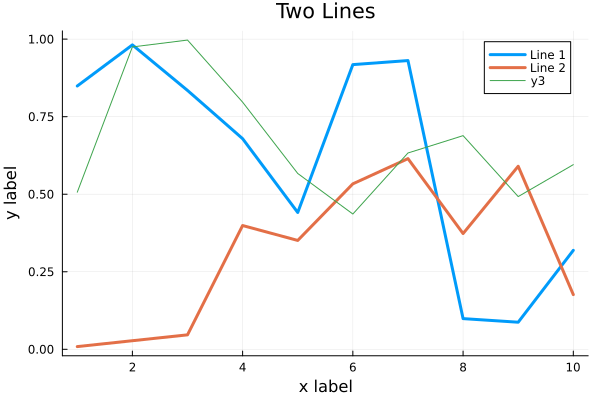
myplot.png¶
Multiple subplots can be created by:
y = rand(10, 4)
p1 = plot(x, y); # Make a line plot
p2 = scatter(x, y); # Make a scatter plot
p3 = plot(x, y, xlabel = "This one is labelled", lw = 3, title = "Subtitle");
p4 = histogram(x, y); # Four histograms each with 10 points? Why not!
plot(p1, p2, p3, p4, layout = (2, 2), legend = false)
Visualizing the Penguin dataset
First load Plots and set the backend to GR (precompilation of Plots
might take some time):
using Plots
gr()
For the Penguin dataset it is more appropriate to use scatter plots, for example:
scatter(df[!, :bill_length_mm], df[!, :bill_depth_mm])
We can adjust the markers by this list of named colors and this list of marker types:
scatter(df[!, :bill_length_mm], df[!, :bill_depth_mm], marker = :hexagon, color = :magenta)
We can also change the plot theme according to this list of themes, for example:
theme(:dark)
# then re-execute the scatter function
We can add a dimension to the plot by grouping by another column. Let’s see if
the different penguin species can be distiguished based on their bill length
and bill depth. We also set different marker shapes and colors based on the
grouping, and adjust the markersize and transparency (alpha). Note that
it is also possible to prescribe a palette rather than every colour individually, with
many common palettes available here:
scatter(df[!, :bill_length_mm],
df[!, :bill_depth_mm],
xlabel = "bill length (mm)",
ylabel = "bill depth (mm)",
group = df[!, :species],
marker = [:circle :ltriangle :star5],
color = [:magenta :springgreen :blue],
markersize = 5,
alpha = 0.8
)
{kind=link}
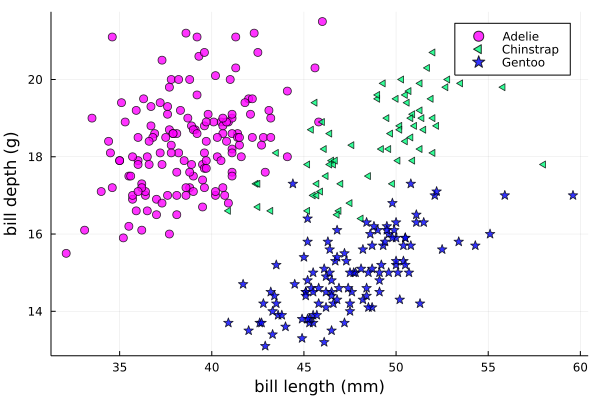
The scatter function comes from the base Plots package. StatsPlots provides
many other types of plot types, for example density. To use dataframes with StatsPlots
we need to use the @df macro which allows passing columns as symbols (this can also be used
for scatter and other plot functions):
using StatsPlots
@df df density(:flipper_length_mm,
xlabel = "flipper length (mm)",
group = :species,
color = [:magenta :springgreen :blue],
)

Exercises¶
Create a custom plotting function
Convert the final scatter plot in the type-along section “Visualizing the Penguin dataset”
and convert it into a create_scatterplot function:
The function should take as arguments a dataframe and two column symbols.
Use the
minimum()andmaximum()functions to automatically set the x-range of the plot using thexlim = (xmin, xmax)argument toscatter().If you have time, try grouping the data by
:islandor:sexinstead of:species(keep in mind that you may need to adjust the number of marker symbols and colors).If you have more time, play around with the plot appearance using
theme()and the marker symbols and colors.
Solution
function create_scatterplot(df, col1, col2, groupby)
xmin, xmax = minimum(df[:, col1]), maximum(df[:, col1])
# markers and colors to use for the groups
markers = [:circle :ltriangle :star5 :rect :diamond :hexagon]
colors = [:magenta :springgreen :blue :coral2 :gold3 :purple]
# number of unique groups can't be larger than the number of colors/markers
ngroups = length(unique(df[:, groupby]))
@assert ngroups <= length(colors)
scatter(df[!, col1],
df[!, col2],
xlabel = col1,
ylabel = col2,
xlim = (xmin, xmax),
group = df[!, groupby],
marker = markers[:, 1:ngroups],
color = colors[:, 1:ngroups],
markersize = 5,
alpha = 0.8
)
end
create_scatterplot(df, :bill_length_mm, :body_mass_g, :sex)
create_scatterplot(df, :flipper_length_mm, :body_mass_g, :island)
Working with DataFrames in Julia
In this exercise, you will practice reading data from CSV files into DataFrames, manipulating data in DataFrames, and visualizing data using a plotting package.
Install the CSV and DataFrames packages by running the following commands in the Julia REPL:
using Pkg Pkg.add("CSV") Pkg.add("DataFrames")
2. Set the relative path to the DailyDelhiClimateTest.csv and DailyDelhiClimateTrain.csv files in the path_test and path_train variables. Assume that the path to your files is juliaforhpda/data and you are currently in the juliaforhpda/ directory in the Julia REPL. The data is available here: https://github.com/ENCCS/julia-for-hpda/blob/main/content/data/DailyDelhiClimateTest.csv and https://github.com/ENCCS/julia-for-hpda/blob/main/content/data/DailyDelhiClimateTrain.csv
This climate data set contains daily mean temperature, humidity, wind speed and mean pressure at a location in Dehli India over a period of several years. The data set was downloaded from here.
Read the data from the CSV files into DataFrames named df_test and df_train using the CSV.read function.
Use the functions provided by the DataFrames package to manipulate the data in the DataFrames. For example, you can select columns, filter rows, group data, compute summary statistics, and compute aggregate functions.
Install a plotting package such as Plots or Gadfly by running the following command in the Julia REPL:
using Pkg Pkg.add("Plots")
Use the plotting package to create a line plot of the mean of the meantemp column for each group in a grouped DataFrame. Customize the appearance of the plot by changing its properties such as color, line style, marker style, etc.
Solution
Here is one possible solution to this exercise:
Once you have read the data from the CSV files into DataFrames, you can manipulate the data using the functions provided by the DataFrames package. Here are some examples that show how to manipulate data in a DataFrame:
using CSV # Set relative path to CSV files path_test = "data/DailyDelhiClimateTest.csv" path_train = "data/DailyDelhiClimateTrain.csv" # Read data from CSV files into DataFrames df_test = CSV.read(path_test, DataFrame) df_train = CSV.read(path_train, DataFrame) using DataFrames # Select columns df_test_selected = select(df_test, :meantemp, :humidity) # Filter rows df_test_filtered = filter(:meantemp => x -> x > 20, df_test) # Group data df_test_grouped = groupby(df_test, :date) # Compute summary statistics describe(df_test) # Compute aggregate functions combine(df_test_grouped, :meantemp => mean)
This code shows how to select columns, filter rows, group data, compute summary statistics, and compute aggregate functions on a DataFrame named df_test. You can use these and other functions provided by the DataFrames package to manipulate the data in the DataFrame.
julia> combine(df_test_grouped, :meantemp => mean)
ERROR: UndefVarError: `mean` not defined
Stacktrace:
[1] top-level scope
@ REPL[39]:1
The mean function is part of the Statistics standard library module in Julia. To use the mean function, you need to load the Statistics module by running using Statistics. Here is an example that shows how to compute the mean of the meantemp column for each group in a grouped DataFrame:
using Statistics
# Compute mean of meantemp column for each group
combine(df_test_grouped, :meantemp => mean)
This code loads the Statistics module and uses the mean function to compute the mean of the meantemp column for each group in a grouped DataFrame named df_test_grouped.
What can we do with this mean, maybe vizualize?
Yes, you can visualize the mean of the meantemp column for each group in a grouped DataFrame using a plotting package such as Plots or Gadfly.
Here is an example that shows how to create a bar plot of the mean meantemp values for each group using the Plots package:
using Plots
# Compute mean of meantemp column for each group
df_test_mean = combine(df_test_grouped, :meantemp => mean)
# Create bar plot of mean meantemp values for each group
p = bar(df_test_mean.date, df_test_mean.meantemp_mean, xlabel="Date", ylabel="Mean Temperature", label="Mean Temperature")
# Display plot
display(p)
This code computes the mean of the meantemp column for each group in a grouped DataFrame named df_test_grouped and stores the result in a new DataFrame named df_test_mean. It then uses the bar function from the Plots package to create a bar plot of the mean meantemp values for each group. The x-axis shows the date and the y-axis shows the mean temperature.

plot.png¶
# Create line plot of meantemp means
plot(df_test_mean.date, df_test_mean.meantemp_mean, label="Mean Meantemp", xlabel="Date", ylabel="Meantemp (°C)", title="Mean Meantemp by Date")
I hope this exercise helps you practice working with DataFrames in Julia!
Working with the Fourier Transform in Julia
In this exercise, you will practice computing the Fourier transform of climate data using the FFTW package in Julia.
Install the FFTW package by running the following command in the Julia REPL:
using Pkg Pkg.add("FFTW")
2. Read the data from the DailyDelhiClimateTest.csv and DailyDelhiClimateTrain.csv files into DataFrames named df_test and df_train using the CSV.read function.
Compute the Fourier transform of the meantemp column in the df_test DataFrame using the fft function from the FFTW package.
Compute the frequencies corresponding to each element of the Fourier transform using the fftfreq function.
Plot the magnitude of the Fourier transform against the frequencies to visualize the frequency spectrum of the signal.
Solution
Here is one possible solution to this exercise:
# using DataFrames
using FFTW
using Plots
# Set relative path to CSV files
path_test = "data/DailyDelhiClimateTest.csv"
path_train = "data/DailyDelhiClimateTrain.csv"
# Read data from CSV files into DataFrames
df_test = CSV.read(path_test, DataFrame)
df_train = CSV.read(path_train, DataFrame)
# Compute Fourier transform of meantemp column
meantemp_fft = fft(df_test.meantemp)
# Compute frequencies
n = length(meantemp_fft)
freq = fftfreq(n)
114-element Frequencies{Float64}:
0.0
0.008771929824561403
0.017543859649122806
0.02631578947368421
0.03508771929824561
0.043859649122807015
0.05263157894736842
⋮
-0.05263157894736842
-0.043859649122807015
-0.03508771929824561
-0.02631578947368421
-0.017543859649122806
-0.008771929824561403
This code uses the fft function from the FFTW package to compute the discrete Fourier transform of the meantemp column in a DataFrame named df_test. It also uses the fftfreq function to compute the frequencies corresponding to each element of the Fourier transform.
Once you have computed the Fourier transform of the data, you can use it to analyze the frequency content of the signal. For example, you can plot the magnitude of the Fourier transform to visualize the dominant frequencies in the signal.
The Fourier transform is a mathematical tool that decomposes a signal into its constituent frequencies. It converts a function from the time domain into the frequency domain, where the output is a complex-valued function of frequency. The magnitude of the Fourier transform represents the contribution of each frequency component to the original signal. In other words, it shows how much of each frequency is present in the original signal. The magnitude is usually plotted against the frequencies to visualize the frequency spectrum of the signal.
Fourier transform can be used to analyze climate data in many ways. For example, it can help identify patterns and periodicities in the data, such as seasonal cycles or other recurring phenomena. By decomposing the signal into its frequency components, the Fourier transform can highlight the dominant frequencies present in the data and help understand the underlying processes that drive climate variability. For example, a study used wavelet local multiple correlation (WLMC) to analyze relationships among several large-scale reconstructed climate variables characterizing North Atlantic: i.e. sea surface temperatures (SST) from the tropical cyclone main developmental region (MDR), the El Niño-Southern Oscillation (ENSO), the North Atlantic Multidecadal Oscillation (AMO), and tropical cyclone counts (TC).
References: (1) Fourier transform - Wikipedia. https://en.wikipedia.org/wiki/Fourier_transform (2) Fourier Transform – from Wolfram MathWorld. https://mathworld.wolfram.com/FourierTransform.html (3) Lecture 8: Fourier transforms - Scholars at Harvard. https://scholar.harvard.edu/files/schwartz/files/lecture8-fouriertransforms.pdf (4) NCL: Simple Fourier Analysis of Climate Data - NCAR Command Language (NCL). https://www.ncl.ucar.edu/Applications/fouranal.shtml (5) Dynamic wavelet correlation analysis for multivariate climate time …. https://www.nature.com/articles/s41598-020-77767-8 (6) NASA Global Daily Downscaled Projections, CMIP6 | Scientific Data - Nature. https://www.nature.com/articles/s41597-022-01393-4
Here is an example that shows how to create a bar plot of the mean meantemp values for each group using the Plots package:
using Plots
# Compute magnitude of Fourier transform
meantemp_fft_mag = abs.(meantemp_fft)
# Create plot of magnitude of Fourier transform against frequencies
p = plot(freq, meantemp_fft_mag, xlabel="Frequency", ylabel="Magnitude", label="Magnitude of Fourier Transform")
# Display plot
display(p)
savefig("ft.png")

ft.png¶
I hope this exercise helps you practice working with the Fourier transform in Julia!
See also¶
- You can create interactive 3D scatter plots in Julia using the PlotlyJS package.
Linear algebra¶
Questions
How does Principle Component Analysis work?
How to generate random matrices and perform sparse matrix computations?
Instructor note
35 min teaching
25 min exercises
Callout
The code in this lesson is written for Julia v1.12.6.
Eigenvectors and eigenvalues¶
Below we will discuss Principal Component Analysis and in that context we recall here the notion of eigenvectors and eigenvalues of a square matrix \(M\).
Eigendecomposition
A vector \(u \neq 0\) is called an eigenvector of a square matrix \(M\) with eigenvalue \(\lambda \in \mathbb{R}\) if \(Mu=\lambda u\). Let us for illustration say that \(\lambda=2\). Then \(Mu=2u\) and the linear map \(M\) maps \(u\) to a vector in the same direction but twice as long.
Eigenvectors and eigenvalues can be computed with the LinearAlgebra package:
using LinearAlgebra
A = [1 2 3;4 5 6;7 8 9]
eigvecs(A) # eigenvectors of A
eigvals(A) # eigenvalues of A
Loading a dataset¶
To prepare our illustration of PCA (Principle Component Analysis), we start by downoading Fisher’s iris dataset. This dataset contains measurements from 3 different species of the plant iris: setosa, versicolor and virginica with 50 datapoints of each species. There are four measurements for each datapoint: sepal length, sepal width, petal length and petal width (in centimeters).
Image of iris by David Iliff.¶
To obtain the data we use the RDatasets package:
using DataFrames, LinearAlgebra, Statistics, RDatasets, Plots
df = dataset("datasets", "iris")
Principal Component Analysis (PCA)¶
PCA can be used for reducing the dimension of your data set by projecting it down to a smaller dimensional space.
Callout
More in detail, PCA finds the best linear space of a specified dimension that approximates the dataset in a least squares sense. This means that the points are as close to the linear space as possible measured in the sum of squared distances. The approximating linear space is spanned by so-called principal components which are ordered in terms of importance: the first principal component, the second principal component and so on.
It turns out the principal components are eigenvectors of the so-called covariance matrix of the data. The corresponding eigenvalues rank the principal components in importance, where the biggest eigenvalue marks the first principal component.
We will now illustrate how PCA can be performed on the iris dataset. For illutrative purposes we will do this explicitly using linear algebra operations.
First extract the first four columns of the data set (the features described above) as well as the labels separately:
Xdf = df[:,1:4]
X = Matrix(Xdf)
y = df[:,5]
First we center the data by substracting the mean:
m = mean(X, dims=1)
r = size(X)[1]
X = X - ones(r,1)*m
Now compute the covariance matrix together with its eigenvectors and eigenvalues:
M = transpose(X)*X
P = eigvecs(M)
E = eigvals(M)
# divide E by r-1=150-1=149 to get variance
4-element Vector{Float64}:
3.5514288530439346
11.65321550639499
36.1579414413664
630.0080141991946
We see that the first eigenvalue is quite a bit smaller than for instance the last one. Our data lies approximately in a 3-dimensional subspace. Most of the variance in the data set happens in this subspace.
Eigenvectors
The eigenvectors of \(M\) are only determined up to sign and implementations vary. For reference we list the eigenvectors \(M\) we got while running this example:
4×4 Matrix{Float64}:
0.315487 -0.58203 0.656589 -0.361387
-0.319723 0.597911 0.730161 0.0845225
-0.479839 0.0762361 -0.173373 -0.856671
0.753657 0.545831 -0.075481 -0.358289
Your output may have some columns with the opposite sign.
The basis \(P\) of eigenvectors we got above is orthogonal and normalized:
transpose(P)*P
4×4 Matrix{Float64}:
1.0 -1.70376e-16 4.7765e-16 2.98372e-16
-1.70376e-16 1.0 -4.7269e-16 -1.41867e-16
4.7765e-16 -4.7269e-16 1.0 1.55799e-17
2.98372e-16 -1.41867e-16 1.55799e-17 1.0
We may perform dimensionality reduction by projecting the data to a smaller subspace:
# projection of data set onto orthonormal basis of eigenvectors
# for example three eigenvectors corresponding to the
# three largest eigenvalues
Xp = X*P[:,2:4]
# The following would result in picking the three least important directions
# interesting comparison to do
# Xp = X*P[:,1:3]
Plotting the result:
setosa = Xp'[:,y.=="setosa"]
versicolor = Xp'[:,y.=="versicolor"]
virginica = Xp'[:,y.=="virginica"]
plt = plot(setosa[1,:],setosa[2,:],setosa[3,:], seriestype=:scatter, label="setosa")
plot!(versicolor[1,:],versicolor[2,:],versicolor[3,:], seriestype=:scatter, label="versicolor")
plot!(virginica[1,:],virginica[2,:],virginica[3,:], seriestype=:scatter, label="virginica")
plot!(xlabel="PC3", ylabel="PC2", zlabel="PC1")
display(plt)

Scatter plot of the projected data. The plot is affected by the choice of eigenvectors (signs).¶
Exercises¶
Exercise
To do the exercsises you need the packages Plots, Distributions and LinearAlgebra.
using Pkg
Pkg.add("Plots")
Pkg.add("Distributions")
Pkg.add("LinearAlgebra")
PCA
We will look at PCA for a simple dataset in two dimensions. Generate data with a normal distribution as follows:
using Distributions, Plots, LinearAlgebra
n = 1000
m = [0.0, 0.0] # mean of distribution
S = [[2.0 1.0];[1.0 2.0]] # covariance matrix of distribution
D = MvNormal(m, S) # multivariate normal distribution
X = rand(D, n)' # sample
Now plot your data:
plt = plot(X[:,1], X[:,2], seriestype=:scatter, markersize=1, label="data", xlims=[-10,10], ylims=[-10,10], aspect_ratio=:equal)
display(plt)
Compute the (scaled) covariance matrix of the data and its eigenvectors and eigenvalues:
M = X'*X
P = eigvecs(M)
E = eigvals(M)
u = P[:,1]
v = P[:,2]
e1 = E[1]
e2 = E[2]
Now plot the data together with its principal components with green and red arrows as follows:
plt = plot(X[:,1], X[:,2], seriestype=:scatter, markersize=1, label="data", xlims=[-10,10], ylims=[-10,10], aspect_ratio=:equal)
myscale = 7
plot!([0,myscale*v[1]],[0,myscale*v[2]], arrow=true, color=:green, linewidth=2, label="first comp")
plot!([0,myscale*u[1]],[0,myscale*u[2]], arrow=true, color=:red, linewidth=2, label="second comp")
display(plt)
Is
M*uequal toe1*uas it should? IsM*vequal toe2*v?Run the whole script a few times (you can copy the script from the solution below).
You might observe that the principal components are flipped from time to time when you rerun the script. Why is that?
Change the number of points to
n = 100. What happens with the principal components if you run the script a few times?Compare the computed (scaled) covariance matrix
Mto the matrixSused to generate data.Did you notice some step in the PCA procedure that was skipped or missing?
The whole script
using Distributions, Plots, LinearAlgebra
n = 1000
m = [0.0, 0.0] # mean
S = [[2.0 1.0];[1.0 2.0]]
D = MvNormal(m, S) # multivariate normal distribution
X =rand(D, n)' # sample
# scaled covariance matrix and eigenvectors
M = X'*X
P = eigvecs(M)
E = eigvals(M)
# eigenvectors and eigenvalues
u = P[:,1]
v = P[:,2]
e1 = E[1]
e2 = E[2]
# plot points
ls = [-10,10]
plt = plot(X[:,1], X[:,2], seriestype=:scatter, markersize=1, label="data", xlims=[-10,10], ylims=[-10,10], aspect_ratio=:equal)
# plot arrows, scale up the arrows for appearence
myscale = 7
plot!([0,myscale*v[1]],[0,myscale*v[2]], arrow=true, color=:green, linewidth=2, label="first comp")
plot!([0,myscale*u[1]],[0,myscale*u[2]], arrow=true, color=:red, linewidth=2, label="second comp")
display(plt)
# are u and v really eigenvectors of M with eigenvalues E?
println(M*u, " # M*u")
println(e1*u, " # e1*u")
println()
println(M*v, " # M*v")
println(e2*v, " # e2*v")

Plots of the data and principal components.¶
Some answers/comments on the questions:
The principal directions (eigenvectors) are only defined up to sign, which partly explains why they may get flipped when you rerun the script. One has to look into the algorithm that computes the eigenvectors to get a full explanation.
When the number of points is only 100, there is not enough data to accurately capture the principal directions so they vary a bit from run to run.
When you take more data,
M/n(divide by the number of data points) should get close toS.Is any step missing in the code examples? The data was not centered. This has a small effect in this case. We are using the true mean (0) of the underlying distribution used to generated data, rather than the sample mean as in previous examples.
Exercise
Try the following code line by line to form random matrices using standard library functions.
# random matrices
rand() # uniformly distributed random number in [0,1]
rand(5) # 5-vector of numbers uniformly distributed on [0,1]
rand(5,5) # 5x5-matrix uniformly distributed on [0,1]
randn(10) # normally distributed 10-vector
Exercise
Sparse matrices (lots of zeros) and effective operations on them can be done using the SparseArrays package. Try the following code line by line.
using SparseArrays
# 100x100-matrix of zeros and ones
# with density 10% (non-zero elements)
M = rand(100,100) .< 0.1
# M as a sparse matrix
S = sparse(M) # SparseMatrixCSC
typeof(M) # BitMatrix (alias for BitArray{2})
typeof(S) # SparseMatrixCSC{Bool, Int64}
# 100x100-matrix with density 10%, as sparse matrix directly
S = sprand(100, 100, 0.1)
Exercise
To do the next exercsise you need the package BenchmarkTools.
using Pkg
Pkg.add("BenchmarkTools")
Exercise
To benchmark and time computations we can use the BenchmarkTools package. Try this with the following code.
using BenchmarkTools
# 100x100-matrix of zeros and ones
# with density 10% (non-zero elements)
M = rand(100,100) .< 0.1
# @time includes compilation time and garbage collection
@time M^2;
# @btime does not include compilation time
@btime M^2;
Sparse matrix computations
Create a sparse (5000x5000)-matrix S with roughly 5000 non-zero elements uniformly distributed on [0,1]. Compute S^10 and time the computation. Compare with S as a Matrix and a sparse matrix (a SparseMatrixCSC).
A sparse \((a \times b)\)-matrix matrix S can be formed with
sprand(a,b,d), wheredis the density of non-zero elements.To convert S to a matrix you can do
Matrix(S).
Here is a suggestion
using SparseArrays, BenchmarkTools
n = 5000
S = sprand(n, n, 1/n) # sparse nxn-matrix with density 1/n
B = Matrix(S) # as Matrix
@btime S^10;
@btime B^10;
# or do @benchmark for more detailed information on performance
# @benchmark S^10
# @benchmark B^10
545.400 μs (29 allocations: 806.98 KiB)
6.343 s (8 allocations: 762.94 MiB)
Exercise
For random matrices from a wider array of distributions we can use the package Distributions. Try the following code where D is a multivariate normal 3-vector.
using Distributions
m = [0,0,1.0] # mean value
S = [[1.0 0 0];[0 2.0 0];[0 0 3.0]] # covaraince matrix
D = MvNormal(m, S) # multivariate normal distribution
rand(D) # sample the distribution
Extra exercises¶
The following exercise is adapted from the Julia language companion of the book Introduction to Applied Linear Algebra – Vectors, Matrices, and Least Squares by Stephen Boyd and Lieven Vandenberghe. Useful information relating to the exercise may also be found in the Extra material below.
Below we will consider the Gram-Schmidt process:
Given a set of linearly independent vectors \({a_1,\dots,a_k}\) return an orthogonal basis of their span.
If the vectors are linearly dependent, return an orthogonal basis of \({a_1,\dots,a_{i-1}}\) where \(a_i\) is the first vector linearly dependent on the previous ones. It is reasonable to consider numerical linear dependence up to a small tolerance, that is there is a linear combination of the vectors that is almost zero.
The algorithm in pseudocode goes as follows. First define the orthogonal projection of a vector \(a\) on a vector \(q\) as
where \(\langle .,. \rangle\) is the dot product and \(|| \cdot ||\) is the norm. For linearly independent vectors, the algorithm goes:
\(\tilde{q}_1 = a_1\)
\(q_1 = \tilde{q}_1/||\tilde{q}_1||\)
\(\tilde{q}_2 = a_2 - \textrm{proj}_{q_1}(a_2)\)
\(q_2 = \tilde{q}_2/||\tilde{q}_2||\),
and so on. That is for \(i=1,2,3,\ldots,k\):
Compute: \(\tilde{q}_i = a_i - \sum_{j=1}^{i-1} \textrm{proj}_{q_j}(a_i)\)
Normalize: \(q_i = \tilde{q}_i/||\tilde{q}_i||\),
and return \({q_1,\dots,q_k}\).
If at some step, \(||\tilde{q}_i|| = 0\), we cannot normalize, linear dependence has been detected and we return \(q_1,\dots,q_{i-1}\).
Gram-Schmidt process
Implement the Gram-Schmidt process in Julia.
Here is a suggestion
using LinearAlgebra
# input is a vector of vectors
# for example a = [a_1, a_2, a_3]
# for vectors a_1, a_2, a_3
function gram_schmidt(a; tol = 1e-10)
q = []
for i = 1:length(a)
qtilde = a[i]
for j = 1:i-1
qtilde -= (q[j]'*a[i]) * q[j]
end
if norm(qtilde) < tol
println("Vectors are linearly dependent.")
return q
end
push!(q, qtilde/norm(qtilde))
end;
return q
end
Check Gram-Schmidt
Write a check for your Gram-Schimdt program that the output consists of orthonormal vectors. Also, for linearly independent input vectors, check that the spans of input and output are the same.
Quick and dirty suggestion
using LinearAlgebra
a_1 = [1,2,3,4];
a_2 = [2,3,4,5];
a_3 = [3,4,5,7];
a = [a_1, a_2, a_3];
Q = gram_schmidt(a);
# create matrices
M = [Q[1] Q[2] Q[3]]
N = [Q[1] Q[2] Q[3] a_1 a_2 a_3]
# test orthogonality, should be 3x3-identity matrix
M'*M
# test span with numerical rank, should be 3
rank(N)
Matrix factorizations
Perform various factorizations on a matrix using standard libraries: QR-factorization, LU-factorization, Diagonalization, Singular-Value-Decomposition.
Distributions and histograms
Plot histograms of some distributions: normal, uniform, binomial, multinomial, exponential, Cauchy, Poisson or other distributions of choice.
Extra material¶
We include some extra material (if time permits) which provides additional examples from the topics above.
List comprehension, slicing and vectorization¶
To get started with vectors in Julia, let’s see how make a range of integers. This is similar to notation of Python and Matlab.
# range notation, list from 1 to 10
1:10
for x in 1:10
println(x)
end
r = -5:27
Vector(r) # to see what is in there
range(-5,27) == -5:27 # true
# range with non-integer step
# from 1.0 to 11.81 in steps 0.23
1:0.23:12
Vector(1:0.23:12)
In Julia one can use list comprehension to create vectors in a simple way similar to Python. This notation follows the set-builder notation from mathematics, such as \(S=\{x \in \mathbb{Z}:x>0\}\) for the set of positive integers.
# list comprehension
[i^2 for i in range(1,40)] # 40-element Vector
# conditional list comprehension
[i^2 for i in range(1,40) if i%5==0] # 8-element Vector
# if else in list comprehension
[if x > 3 x else x^2 end for x in 1:5] # 1,4,9,4,5
# note the whole if-else clause if x > 3 x else x^2 end
# another way to do conditionals
[3 < x ? x : x^2 for x in 1:5] # 1,4,9,4,5
We can use several index variables and loop over a product set.
# loop over product set
[x - y for x in 1:10, y in 1:10]
# Extra example
# [x < y ? x : x*y for (x, y) in zip([1 2 3 4 5], [1 1 2 2 3])]
# 1,2,6,8,15
# output of [x - y for x in 1:10, y in 1:10]
10×10 Matrix{Int64}:
0 -1 -2 -3 -4 -5 -6 -7 -8 -9
1 0 -1 -2 -3 -4 -5 -6 -7 -8
2 1 0 -1 -2 -3 -4 -5 -6 -7
... ...
8 7 6 5 4 3 2 1 0 -1
9 8 7 6 5 4 3 2 1 0
Comparing ways of forming vectors: using functions, for loops and list comprehension.
mypairwise(x,y)=x*y
A = [1,2,3,4]
B = [2,3,4,5]
# vectorization with dot notation
# more on that later
mypairwise.(A, B) # 2,6,12,20
# another way
for x in zip(A,B)
println(x[1]*x[2])
end
# and another way
[x*y for (x, y) in zip(A, B)]
To pick out elements in vectors and matrices one can use slicing, which is also similar to Python and Matlab.
# slicing
X = [x^2 for x in range(1,11)]
X[1] # first element 1
X[end] # last element 121
X[4:9] # 16,25,36,49,64,81
X[8:end] # 64,81,100,121
# uniform distribution on [0,1]
X = rand(5,5) # random 5x5-matrix
X[1,:] # first row
X[:,3] # third column
X[2,4] # element in row 2, column 4
Vectorization (element wise operation) is done with the dot syntax similar to Matlab.
# vectorization or element wise operation
A = [1,2,3,4]
B = [2,3,4,5]
A^2 # MethodError
A.^2 # [1,4,9,16]
A .+ B
A + B == A .+ B # true
A*B # MethodError
A.*B
sin(A)
# ERROR: MethodError: no method matching sin(::Vector{Int64})
sin.(A) # 4-element Vector
# add constant to vector
A + 3 # ERROR: MethodError: no method matching +(::Vector{Int64}, ::Int64)
A .+ 3 # 4,5,6,7
# vectorize everywhere
@. sin(A) + cos(A)
@. A+A^2-sin(A)*sin(B)
julia> @. A+A^2-sin(A)*sin(B)
4-element Vector{Float64}:
1.2348525987657073
5.871679939797543
12.106799974237582
19.27428371612359
An example where vectorization, random vectors and Plot are combined:
using Plots
x = range(0, 10, length=100)
# vector has length 100
# from 0 to 10 in 99 steps of size 10/99=0.101...
y = sin.(x)
y_noisy = @. sin(x) + 0.1*randn() # normally distributed noise
plt = plot(x, y, label="sin(x)")
plot!(x, y_noisy, seriestype=:scatter, label="data")
# to save figure in file
# savefig("sine_with_noise.png")
display(plt)

Sine function with noise.¶
We can append existing arrays by pushing new elements at the end and we can retrieve (and remove) the last element by popping it.
# pushing elements to vector
U = [1,2,3,4]
push!(U, 55) # [1,2,3,4,55]
pop!(U) # 55
U # [1,2,3,4]
# Array of type Any
U = []
push!(U, 5) # [5]
u = [1,2,3]
push!(U, u) # [5, [1,2,3]]
Use copy if you want a copy of an existing element rather than a reference to it.
# references
u = [1,2,3,4]
v = u # v refers to u
v[2] = 33 # when v changes
v # [1,33,3,4]
u # [1,33,3,4], so does u
# using copy
u = [1,2,3,4]
v = copy(u) # v is a copy of u
v[2] = 33 # v changes
v # [1,33,3,4]
u # [1,2,3,4], but not u
Copies can be of import when building arrays from mutable objects created earlier.
# curiosity: push! stores a reference to the object pushed, not a copy
U = []
push!(U, 5)
u = [1,2,3]
push!(U, u) # [5, [1,2,3]]
u[2] = 77
U # [5, [1,77,3]]
u # [1,77,3]
# Can use copy if want other behavior
u = [1,2,3]
U = [5, copy(u)]
u[2] = 77
U # is still [5, [1,2,3]]
# however
v = U[2]
v[2] = 77
U # [5, [1,77,3]]
Matrix and vector operations¶
Recall that matrices and vectors may be defined as follows:
using LinearAlgebra
# define some row vectors
v1 = [1.0, 2.0, 3.0]
v2 = v1.^2
# combine row vectors into 3x3 matrix
A = [v1 v2 [7.0, 6.0, 5.0]]
# another way to make matrices
M = [5 -3 2;15 -9 6;10 -6 4]
# common matrices and vectors:
# zeros
zeros(5) # [0,0,0,0,0]
zeros(5,5) # 5x5-matrix of zeros
# ones
ones(5) # [1,1,1,1,1]
ones(5,5) # 5x5-matrix of ones
# random matrix
M = randn(5,5) # normally distributed 5x5-matrix
# identity matrix (may not need this, see operator I below)
I(5) # 5x5 identity matrix
I(5)*M == M # true
julia> A
3×3 Matrix{Float64}:
1.0 1.0 7.0
2.0 4.0 6.0
3.0 9.0 5.0
julia> M
3×3 Matrix{Int64}:
5 -3 2
15 -9 6
10 -6 4
# vector addition and scaling
v1 + v2
v1 - 0.5*v2
v3 = [7.0, 11.0, 13.0]
B = [v3 v2 v1]
# matrix vector multiplication
A*v1
# matrix multiplication
A*B
A^5
julia> v1+v2
3-element Vector{Float64}:
2.0
6.0
12.0
julia> v1 - 0.5*v2
3-element Vector{Float64}:
0.5
0.0
-1.5
julia> A*B
3×3 Matrix{Float64}:
44.0 68.0 24.0
44.0 72.0 28.0
48.0 84.0 36.0
Standard operations such as rank, determinant, trace, matrix multiplication, transpose, matrix inverse, identity operator, eigenvalues, eigen vectors and so on:
# rank of matrix
rank(A) # full rank 3
# rank is numerical rank
# counting how many singular values of A
# have magnitude greater than a tolerance
rank([[1,2,3] [1,2,3] + [2,5,7]*0.5]) # rank 2
rank([[1,2,3] [1,2,3] + [2,5,7]*1e-14]) # rank 2
rank([[1,2,3] [1,2,3] + [2,5,7]*1e-15]) # rank 1
# determinant
det(A) # 16
# lower rank matrix
C = [v1 v2 v1+0.66*v2]
rank(C) # rank 2
# 6x6 matrix
D = [A A;A A]
rank(D) # 3
det(D) # 0
# trace
tr(A) # 10
# eigen vectors and eigenvalues
eigen(A)
# identity operator (does not build identity matrix)
I
A*I # A
I*D # D
# matrix inverse
inv(A)
inv(A)*A # identity matrix
A*inv(A) # identity matrix
# solving linear systems of equations
u = A*v1
# solve A*x = u with least squares
A \ u # v1
# solve in another way
inv(A)*u # v1
# matrix must have full rank
inv(C) # ERROR: SingularException(3)
# nilpotent matrix M from above
rank(M) # 1
M*M # zero matrix
# transpose
transpose(A)
A' # transpose of real matrix
# complex matrix
E = (A+im*A)
E' # Hermitian conjugate
# dot product
dot(v1, v2) # 36
v1'*v2 # 36
# cross product of 3-vectors
cross(v1, v2)
dot(cross(v1, v2), v1) # 0 (orthogonal)
julia> eigen(A)
Eigen{Float64, Float64, Matrix{Float64}, Vector{Float64}}
values:
3-element Vector{Float64}:
-3.250962397052609
-0.3615511210246384
13.61251351807725
vectors:
3×3 Matrix{Float64}:
-0.821765 -0.96124 -0.440897
-0.211254 0.228475 -0.539484
0.529221 0.154329 -0.717333
Timing¶
Some examples of timing and benchmarking.
using BenchmarkTools
function my_product(A, B)
for x in zip(A,B)
push!(C, x[1]*x[2])
end
C
end
A = randn(10^8)
B = randn(10^8)
C = Float64[]
# @time includes compilation time and garbage collection
@time my_product(A, B);
@time A.*B;
println()
tic = time()
C = my_product(A, B)
toc = time()
println("Manual time measure: ", toc - tic)
println()
# @btime does not includes compilation time
@btime my_product(A, B);
@btime A.*B;
4.116207 seconds (100.01 M allocations: 1.634 GiB, 13.91% gc time, 0.55% compilation time)
0.191240 seconds (4 allocations: 762.940 MiB, 0.63% gc time)
Manual time measure: 3.63100004196167
3.062 s (100000000 allocations: 1.49 GiB)
186.446 ms (4 allocations: 762.94 MiB)
Questions
Benchmark time varies quite a lot between runs. Why?
Random matrices and sparse matrices¶
Here is how you can create random matrices and vectors with various distributions.
# introduce std standard deviation (used in PCA exercise)
# normal distribution as above
randn(100, 100) # 100x100-matrix
# uniform distribution
rand() # uniformly distributed random number in [0,1]
rand(5) # uniform 5-vector
rand(5,5) # uniform 5x5-matrix
rand(1:88) # random element of 1:88
rand(1:88, 5) # 5-vector
rand("abc", 5, 5) # 5x5-matrix random over [a,b,c]
More involved computations with random variables can be done with the Distributions package.
using Distributions
m = [0,0,1.0] # mean
S = [[1.0 0 0];[0 2.0 0];[0 0 3.0]] # covaraince matrix
D = MvNormal(m, S) # multivariate normal distribution
rand(D) # sample
# binomial and multinomial distribution
Y = Binomial(10, 0.3)
rand(Y) # sample
Y = Multinomial(10, [0.3,0.6, 0.1])
rand(Y) # sample
# Exponential distribution
E = Exponential()
# draw 10 samples from E (all will be non-negative)
rand(E, 10)
# discrete multivariate
rand(5, 5) .< 0.1 # 0.1 chance of 1
Sparse matrices may be constructed with the SparseArrays package.
using SparseArrays
# 100x100-matrix with density 10% (non-zero elements)
M = rand(100,100) .< 0.1
S = sparse(M) # SparseMatrixCSC
typeof(M) # BitMatrix (alias for BitArray{2})
typeof(S) # SparseMatrixCSC{Bool, Int64}
# 100x100-matrix with density 10%, as sparse matrix directly
S = sprand(100, 100, 0.1)
Data science and machine learning¶
Questions
Can I use Julia for machine learning?
What are the key steps in data preprocessing in Julia?
How can you handle missing data in Julia?
How can you save your current environment in Julia?
What are some popular machine learning algorithms available in Julia?
How does Julia handle large datasets in machine learning?
How can you implement clustering in Julia?
What are some classification techniques available in Julia?
Instructor note
100 min teaching
50 min exercises
Machine learning¶
Machine learning (ML) is a branch of artificial intelligence (AI) and computer science that focuses on the use of data and algorithms to imitate the way that humans learn, gradually improving its accuracy. It is an umbrella term for solving problems for which development of algorithms by human programmers would be cost-prohibitive, and instead the problems are solved by helping machines “discover” patterns and algorithms to deal with data. Classical machine learning algorithms include (non-)linear regression, logistic regression,support vector machines (SVM), k-Nearest Neigbours, xgboost and many others, spanning supervised learning (where the algorithm is shown examples of what it should do), unsupservised learning (where it learns autonomously) and reinforcement learning (where a reward policy is used to “teach”). Deep learning, which will be discussed in more depth in a later section, is a type of machine learning algorithm.
References:
What is Machine Learning? – IBM. https://www.ibm.com/topics/machine-learning
Machine learning - Wikipedia. https://en.wikipedia.org/wiki/Machine_learning
Machine learning in Julia¶
Despite being a relatively new language, Julia already has a strong and rapidly expanding ecosystem of libraries for machine learning and deep learning. An important advantage of Julia for ML is that it is possible to extract very good performance by writing pure Julia code, without resorting to backends written in compiled languages. A distinct feature of the Julian ML ecosystem is a well-developed stack for “scientific machine learning” (SciML) (a.k.a. physics-informed learning), which is a flavour of machine learning that incorporates physics (ODEs, PDEs…) into the learning process instead of relying only on data. SciML relies heavily on automatic differentiation - the ability to automatically compute derivatives of any function and thus incorporate it into predictive models.
Traditional machine learning¶
Julia has packages for traditional (non-deep) machine learning:
ScikitLearn.jl is a port of the popular Python package.
MLJ.jl provides a common interface and meta-algorithms for selecting, tuning, evaluating, composing and comparing over 150 machine learning models.
Machine Learning · Julia Packages lists various Julia packages related to machine learning, such as MLJ.jl, Knet.jl, TensorFlow.jl, DiffEqFlux.jl, FastAI.jl, ScikitLearn.jl, and many more. You can browse the packages by their popularity, alphabetical order, or update date. Each package has a brief description and a link to its GitHub repository.
AI · Julia Packages lists Julia packages related to Artificial Intelligence broadly
We will use a few utility functions from MLJ.jl in our deep learning
exercise below, so we will need to add it to our environment:
using Pkg
Pkg.add("MLJ")
Clustering and Classification¶
In this episode, we will go through a Clustering example. Clustering is an unsupervised learning technique, used to discover “groups” of datapoints (called clusters) such that:
Points belonging to the same cluster are similar, in the sense that they share common properties
Points in different clusters are not similar
Being an unsupervised method, it doesn’t need labeled examples, it aims to uncover hidden structure in the data. It is commonly used in a number of situations, including customer segmentation, geospatial analysis, biomedical data analysis, even time series analysis in some cases.
In Julia, the Clustering.jl package implements a
few common clustering algorithms, including k-means, density based clustering
and more, with most algorithms expecting data in a matrix of shape (features x
observations).
In this particular example, we will use (a sample of) the published dataset of
the New York City yellow taxi rides.
This data is published monthly by an agency of the municipality of New York and
includes data such as pickup and dropoff locations (lat/lon or an “ID” that can
be mapped to a location) and timestamps, trip length, airport fare surcharge,
fare mount, tips, and more. This dataset is very big (a few GBs, 12 million rows
for January 2015), thus we prepared two subsets for local exploration: one
having 100k rows
and one having 50k rows.
In our tests, the clustering should be able to run in just a few seconds even
with 100k rows. Please download the datasets now! The idea is to try to uncover
patterns in the data, e.g. correlation between location and tipping/fare,
whether clusters correspond to specific location, and so on. To do this, we will
use the k-means clustering algorithm. The objective is to partition the
dataset into k clusters by minimising the distance between points and their
assigned cluster centre. The algorithm is implemented as follows:
Choose the number of clusters
k. This can be done either by the user based on preliminary knowledge of the data (e.g. number of cell populations in biomedical data) or with some heuristic (e.g. elbow method)Initialise
kcluster centres randomlyAssign each point to the nearest centre
Update each centre as the mean of the assigned points
Repeat 3 and 4 until convergence
The function to minimise is:
where:
\(C_k\) is a cluster
\(\mu_k\) is its centroid
There are several other clustering techniques, such as k-medoids, DBSCAN and hierarchical clustering. Now, let us try to apply this to our example dataset!
Clustering example of NYC yellow taxi rides
using DataFrames, Parquet2
df = DataFrame(Parquet2.Dataset("taxi_100k.parquet"); copycols=true)
dropmissing!(df)
# Remove extreme outliers
df = filter(row -> -74.1 < row[:pickup_longitude] < -73.7 && 40.6 < row[:pickup_latitude] < 40.9, df)
We can now select the features we’re interested in, such as geographical information (latitude and longitude), distance and fare:
features = select(df, [
:pickup_longitude,
:pickup_latitude,
:fare_amount,
:trip_distance,
])
Moreover, we need to scale the data (we’re computing distance between clusters, so we don’t want larger fields to be overrepresented):
using Statistics
X = Matrix(features)
μ = mean(X, dims=1)
σ = std(X, dims=1)
X_scaled = ((X .- μ) ./ σ)'
Now we can go for the actual clustering:
using Clustering
k = 6
result = kmeans(X_scaled, k)
clusters = result.assignments
Visualisation (plot pickup location, colour by cluster):
using Plots
scatter(
df.pickup_longitude,
df.pickup_latitude,
marker_z = clusters,
ms = 2,
alpha = 0.5,
legend = false,
xlabel = "Longitude",
ylabel = "Latitude",
title = "Taxi Clusters (Location + Price + Distance)"
)
You should hopefully get something similar:
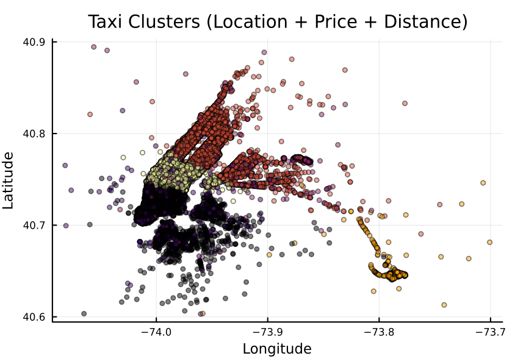
Exercises
Exercise1: Spatial clustering only
Cluster using only longitude and latitude and compare the results with multi-feature clustering.
Solution
X_geo = Matrix(select(df, [:pickup_longitude, :pickup_latitude]))'
result_geo = kmeans(X_geo, 6)
Exercise 2: Add time features
Try adding the tip amount to the features and see if people in certain areas tip more!
Solution
features = select(df, [
:pickup_longitude,
:pickup_latitude,
:fare_amount,
:tip_amount
])
# ... carry on as before
Exercise 3: Geospatial plotting
Let us now try to get a nicer plot by plotting the clusters on the land surface of the city. To do so, we use the ``GeoMakie.jl <https://geo.makie.org/stable/>`_ package, which is suitable for geospatial data plotting, and NaturalEarth.jl which is a proxy to the Natural Earth dataset, containing the landmass (and other features) of the whole planet.
Solution
using NaturalEarth, GeoJSON, CairoMakie, GeoMakie
geo = NaturalEarth.naturalearth("land", 10)
lon_min, lon_max = -74.3, -73.65
lat_min, lat_max = 40.45, 40.95
fig = Figure(resolution=(900,700), backgroundcolor=:lightblue);
ax = Axis(fig[1,1]);
for feature in geo.features
geom = feature.geometry
if geom isa GeoJSON.Polygon
for ring in geom.coordinates
xs = getindex.(ring, 1)
ys = getindex.(ring, 2)
if maximum(xs) > lon_min && minimum(xs) < lon_max
poly!(ax, xs, ys, color=:lightgray)
end
end
elseif geom isa GeoJSON.MultiPolygon
for poly_coords in geom.coordinates
for ring in poly_coords
xs = getindex.(ring, 1)
ys = getindex.(ring, 2)
if maximum(xs) > lon_min && minimum(xs) < lon_max
poly!(ax, xs, ys, color=:lightgray)
end
end
end
end
end
Makie.scatter!(ax, df.pickup_longitude, df.pickup_latitude, color = clusters)
Makie.xlims!(ax, lon_min, lon_max)
Makie.ylims!(ax, lat_min, lat_max)
fig
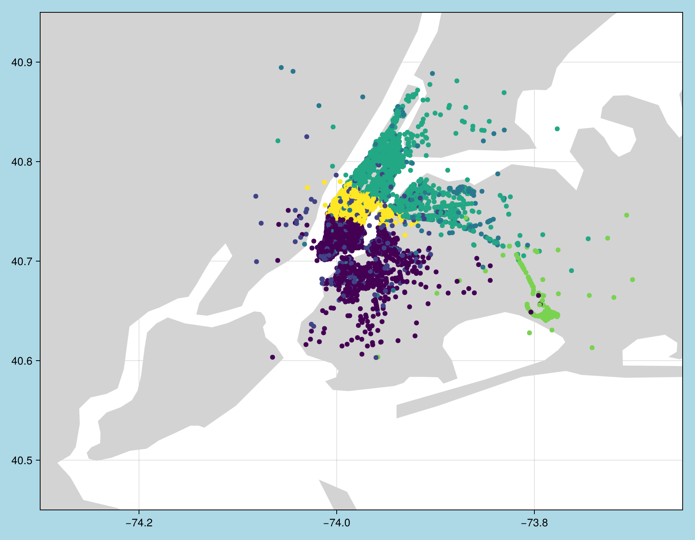
Furthermore, we also have a couple of notebooks that deal with clustering and classification problems. The first one deals with another example of clustering of housing prices in California and follows a similar structure, although it uses a different plotting package. The second one shows different ways to perform a classification task on the Iris dataset from a previous episode, building on our findings to try to predict the three species using a variety of traditional machine learning techniques such as Lasso, Support Vector Machines (SVM), Ridge regression and more. They can be run in VS Code or through the JupyterLab interface.
Clustering notebook: https://github.com/ENCCS/julia-for-hpda/blob/main/notebooks/Clustering.ipynb
Classification notebook: https://github.com/ENCCS/julia-for-hpda/blob/main/notebooks/Classification.ipynb
Deep learning¶
Deep learning is a subset of ML. Neural networks are a particular type of ML approach which tries to loosely mimic the functioning of a human brain and consists of connected computational units called neurons; each neuron has one or more inputs and (mostly) performs three fundamental operations: - Take a weighted sum of the inputs with a vector of weights - Add an extra constant weight (bias) - Apply an (usually non-linear) activation function to this weighted sum.
In essence, given a input vector \((x_1,x_2,...,x_N)\), a neuron computes:
where f is the activation function, \(w_i\) are the weights and b is the bias.
These neural networks attempt to simulate the behavior of the human brain — albeit far from matching its ability — allowing it to “learn” from large amounts of data. Deep learning drives many AI applications and services that improve automation, performing analytical and physical tasks without human intervention. Large language models and other generative AI models are very large neural networks with specific architectures.
For more detailed information, the Intro to deep learning course gives a good overview of the building blocks of a neural network.
At the time of writing (2026), two main frameworks are used when dealing with neural networks in Julia: Flux.jl and Lux.jl.
Flux.jl comes “batteries-included” with many useful tools built in, but also enables the user to write own Julia code for DL components.
Flux has relatively few explicit APIs for features like regularisation or embeddings. Core components are available, but there are few rigid, high-level APIs. Things like regularisation and embeddings are written using standard Julia code patterns
All of Flux is straightforward Julia code and can be inspected/extended (no DSLs)
Flux works well with other Julia libraries, like dataframes, images and differential equation solvers. One can build complex data processing pipelines that integrate Flux models.
Lux.jl, on the other hand, is a newer framework that has a more functional programming style. While the building blocks are similar (layers, activation functions,etc.), the models are pure functions and the state is passed around as an argument. While this may look clunkier at first, it does have some advantages when trying to optimise code, and models can be composed, transformed and differentiated with standard Julia tools without special abstractions. Moreover, a Training API is available to hide some of the boilerplate if needed.
Generally speaking, Lux shines when integration with SciML is needed, or any time neural networks are embedded in larger scientific computing applications, and new developments tend to land in Lux first. Conversely, Flux is the more mature, general purpose deep learning framework. From a Python perspective, Flux feels more like PyTorch/Keras, whereas Lux is more akin to Jax/Flax.
To install Flux:
using Pkg
Pkg.add("Flux")
Whereas for Lux:
using Pkg
Pkg.add("Lux")
Training a deep neural network to classify penguins
To train a model we need four things:
A collection of data points that will be provided to the objective function.
A objective (cost or loss) function, that evaluates how well a model is doing given some input data.
The definition of a model and access to its trainable parameters.
An optimiser that will update the model parameters appropriately.
In this case, we will train a simple neural network to be able to classify the four species of penguins from the dataset above based on their anatomical features (bill length, depth, etc.).
First we load the data:
using MLJ: partition, ConfusionMatrix, mean, std
using DataFrames
using PalmerPenguins
using OneHotArrays
table = PalmerPenguins.load()
df = DataFrame(table)
dropmissing!(df)
We can now preprocess our dataset to make it suitable for training a network:
# select feature and label columns
X = select(df, Not([:species, :sex, :island]))
Y = df[:, :species]
# split into training and testing parts
(xtrain, xtest), (ytrain, ytest) = partition((X, Y), 0.8, shuffle=true, rng=123, multi=true)
# use single precision and transpose arrays
xtrain, xtest = Float32.(Array(xtrain)'), Float32.(Array(xtest)')
# one-hot encoding
ytrain = OneHotArrays.onehotbatch(ytrain, ["Adelie", "Gentoo", "Chinstrap"])
ytest = OneHotArrays.onehotbatch(ytest, ["Adelie", "Gentoo", "Chinstrap"])
# count penguin classes to see if it's balanced
sum(ytrain, dims=2)
sum(ytest, dims=2)
Next up is the loss function which will be minimized during the training. We also define another function which will give us the accuracy of the model:
using Flux
# we use the cross-entropy loss function typically used for classification
loss(model, x, y) = Flux.crossentropy(model(x), y)
# onecold (opposite to onehot) gives back the original representation
function accuracy(x, y)
return sum(OneHotArrays.onecold(model(x)) .== OneHotArrays.onecold(y)) / size(y, 2)
end
model will be our neural network, so we go ahead and define it:
n_features, n_classes, n_neurons = 4, 3, 10
model = Chain(
Dense(n_features, n_neurons, sigmoid),
Dense(n_neurons, n_classes),
softmax)
We now set up our optimizer. We have selected the standard optimizer ADAM:
opt_state = Flux.setup(Adam(), model)
Before training the model, let’s have a look at some initial predictions and the accuracy:
# predictions before training
model(xtrain[:,1:5])
ytrain[:,1:5]
# accuracy before training
accuracy(xtrain, ytrain)
Finally we are ready to train the model. Let’s run 100 epochs:
# the training data and the labels can be passed as tuples to train!
for i in 1:100
Flux.train!((m,x,y) -> loss(m, x, y), model, [(xtrain, ytrain)], opt_state)
end
# check final accuracy
accuracy(xtrain, ytrain)
accuracy(xtest, ytest)
We finally create a confusion matrix to quantify the performance of the model:
predicted_species = OneHotArrays.onecold(model(xtest), ["Adelie", "Gentoo", "Chinstrap"])
true_species = OneHotArrays.onecold(ytest, ["Adelie", "Gentoo", "Chinstrap"])
ConfusionMatrix()(predicted_species, true_species)
The model can be serialised for later inference using JLD2:
@save "model_trained.jld2" model_state=Flux.state(model)
@load "model_trained.jld2" model_state
model = model(); # So the definition has to be available
Flux.loadmodel!(model, model_state);
using Lux, Random, Optimisers # cross-entropy loss function loss = Lux.CrossEntropyLoss() # accuracy function # onecold (inverse of onehot) gives back the original representation function accuracy(model, ps, st, x, y) return sum(OneHotArrays.onecold(first(model(x, ps, st))) .== OneHotArrays.onecold(y)) / size(y,2) endmodel above is our neural network, so we can go on and create it!
n_features, n_classes, n_neurons = 4, 3, 10 model = Lux.Chain( Dense(n_features => n_neurons,sigmoid), Dense(n_neurons => n_classes), x -> softmax(x) )We can now set up the actual training infrastructure. For this case, we’ll use the Lux Training API:
rng = Random.default_rng() ps, st = Lux.setup(rng, model) opt = Optimisers.Adam(0.01) train_state = Lux.Training.TrainState(model, ps, st, opt)In this case, we used an Adam optimiser. We can give a look at the initial predictions (i.e. before training)
accuracy(model, ps, st, xtrain, ytrain)Now we can start the training loop!
for epoch in 1:100 _, l, _, train_state = Lux.Training.single_train_step!(AutoZygote(), loss, (xtrain, ytrain), train_state) if epoch % 10 == 0 println("Epoch $epoch - Loss $l") end end # check final accuracy accuracy(xtrain, ytrain) accuracy(xtest, ytest)
The performance of the model is probably somewhat underwhelming, but you will fix that in an exercise below!
We finally create a confusion matrix to quantify the performance of the model:
predicted_species = OneHotArrays.onecold(first(model(xtest, ps, st)), ["Adelie", "Gentoo", "Chinstrap"])
true_species = OneHotArrays.onecold(ytest, ["Adelie", "Gentoo", "Chinstrap"])
ConfusionMatrix()(predicted_species, true_species)
The model parameters can be saved using JLD2:
@save "trained_model.jld2" ps st
@load "trained_model.jld2" ps st
y, st = model(x, ps, st)
As you can see, the performance of the model is less than optimal. This is due to a combination of two effects: - The features have very different ranges (from about 15 to 6000) - We are using a sigmoid activation function
The sigmoid function is capped between 0 and 1 and tends to “squish” the very large and very small values. When the features have different ranges, sigmoid leads to a loss of information, which prevents the network from learning effectively. We will try to fix this, as well as apply other optimisations, in the exercises below.
Exercises¶
Improve the deep learning model
Improve the performance of the neural network we trained above! A standard method in machine learning is to normalize features by “batch normalization”. Replace the network definition with the following and see if the performance improves:
n_features, n_classes, n_neurons = 4, 3, 10
model = Chain(
Dense(n_features, n_neurons),
BatchNorm(n_neurons, relu),
Dense(n_neurons, n_classes),
softmax)
n_features, n_classes, n_neurons = 4, 3, 10
model = Chain(
Dense(n_features => n_neurons),
BatchNorm(n_neurons, relu),
Dense(n_neurons => n_classes),
softmax
)
Performance is usually better also if we, instead of training on the entire dataset at once, divide the training data into “minibatches” and update the network weights on each minibatch separately. First define the following function:
using StatsBase: sample
function create_minibatches(xtrain, ytrain; batch_size=32, n_batch=10)
minibatches = Tuple[]
for i in 1:n_batch
randinds = sample(1:size(xtrain, 2), batch_size)
push!(minibatches, (xtrain[:, randinds], ytrain[:,randinds]))
end
return minibatches
end
and then create the minibatches by calling the function.
You will not need to manually loop over the minibatches, simply pass
the minibatches vector of tuples to the Flux.train! function.
Does this make a difference?
Solution
function create_minibatches(xtrain, ytrain; batch_size=32, n_batch=10)
minibatches = Tuple[]
for i in 1:n_batch
randinds = sample(1:size(xtrain, 2), batch_size)
push!(minibatches, (xtrain[:, randinds], ytrain[:,randinds]))
end
return minibatches
end
n_features, n_classes, n_neurons = 4, 3, 10
model = Chain(
Dense(n_features, n_neurons),
BatchNorm(n_neurons, relu),
Dense(n_neurons, n_classes),
softmax)
opt_state = Flux.setup(Adam(), model)
minibatches = create_minibatches(xtrain, ytrain)
for i in 1:100
# train on minibatches
Flux.train!((m,x,y) -> loss(m, x, y), model, minibatches, opt_state);
end
accuracy(xtrain, ytrain)
# 0.9849624060150376
accuracy(xtest, ytest)
# 0.9850746268656716
predicted_species = OneHotArrays.onecold(model(xtest), ["Adelie", "Gentoo", "Chinstrap"])
true_species = OneHotArrays.onecold(ytest, ["Adelie", "Gentoo", "Chinstrap"])
ConfusionMatrix()(predicted_species, true_species)
function create_minibatches(xtrain, ytrain; batch_size=32, n_batch=10)
minibatches = Tuple[]
for i in 1:n_batch
randinds = sample(1:size(xtrain, 2), batch_size)
push!(minibatches, (xtrain[:, randinds], ytrain[:,randinds]))
end
return minibatches
end
n_features, n_classes, n_neurons = 4, 3, 10
model = Chain(
Dense(n_features => n_neurons),
BatchNorm(n_neurons, relu),
Dense(n_neurons => n_classes),
softmax
)
rng = Random.default_rng()
ps, st = Lux.setup(rng, model)
# ----------------------
# Optimizer + TrainState
# ----------------------
opt = Adam(0.01)
tstate = Lux.Training.TrainState(model, ps, st, opt)
minibatches = create_minibatches(xtrain, ytrain)
for epoch in 1:epochs
for batch in minibatches
_, l, _, tstate = Training.single_train_step!(
AutoZygote(),
loss,
batch,
tstate
)
end
end
accuracy(Lux.testmode(model), ps, st, xtrain, ytrain)
# 0.9849624060150376
accuracy(Lux.testmode(model), ps, st, xtest, ytest)
# 0.9850746268656716
predicted_species = OneHotArrays.onecold(first(model(xtest, ps, st)), ["Adelie", "Gentoo", "Chinstrap"])
true_species = OneHotArrays.onecold(ytest, ["Adelie", "Gentoo", "Chinstrap"])
ConfusionMatrix()(predicted_species, true_species)

Much better!
More improvements
Exercise: Hyperparameter Tuning
Experiment with different hyperparameters of the model and the training process.
# Try different batch sizes in the minibatch creation.
minibatches = create_minibatches(xtrain, ytrain, batch_size=64, n_batch=10)
# Experiment with different learning rates for the ADAM optimizer.
opt_state = Flux.setup(Adam(0.05), model)
# Change the number of neurons in the hidden layer of the model.
model = Chain(
Dense(n_features, 20, relu),
Dense(20, n_classes),
softmax
)
# The solution will depend on the specific hyperparameters chosen.
Exercise: Feature Engineering
Consider doing some feature engineering on your input data.
# Try normalizing or standardizing the input features.
xtrain = (xtrain .- mean(xtrain, dims=2)) ./ std(xtrain, dims=2)
xtest = (xtest .- mean(xtest, dims=2)) ./ std(xtest, dims=2)
Exercise: Different Model Architectures
Experiment with different model architectures.
# Try adding more layers to your model.
model = Chain(
Dense(n_features, n_neurons, relu),
Dense(n_neurons, n_neurons, relu),
Dense(n_neurons, n_classes),
softmax
)
Remember to experiment and see how these changes affect your model’s performance! 😊
See also¶
Many interesting datasets are available in Julia through the RDatasets package. For instance:
Pkg.add("RDatasets") using RDatasets # load a couple of datasets iris = dataset("datasets", "iris") neuro = dataset("boot", "neuro")
Neuromorphic | Probabilistic learning¶
Nordic Neuromorphs | NorN Discord Community – https://discord.gg/5Qq6yX5
Linear regression¶
Questions
How can I perform simple linear regression in Julia?
How to do linear regression with non-linear basis functions?
How do to basic Fourier based regression?
How to perform non-linear regression and time-series prediction?
Instructor note
90 min teaching
60 min exercises
Callout
The code in this lesson is written for Julia v1.12.6.
Linear regression with synthetic data¶
We begin with some simple examples of linear regression on generated data. For the models we will use the package GLM (Generalized Linear Models), which among other things contains linear regression models.
Let’s start by generating some data along a line and add normally distributed noise.
using Plots, GLM, DataFrames
X = Vector(range(0, 10, length=20))
y = 5*X .+ 3.4
y_noisy = @. 5*X + 3.4 + randn()
plt = plot(X, y, label="linear")
plot!(X, y_noisy, seriestype=:scatter, label="data")
display(plt)

Given data \(x_1,x_2,\ldots,x_k\) and responses \(y_1,y_2,\ldots,y_k\), the ordinary least squares method finds the linear function \(l(x) = ax+b\) minimizing the sum of squares error \(\sum_i (l(x_i)-y_i)^2\).
using Plots, GLM, DataFrames
X = Vector(range(0, 10, length=20))
y = 5*X .+ 3.4
y_noisy = @. 5*X + 3.4 + randn()
df = DataFrame(cX=X, cy=y_noisy)
lm1 = fit(LinearModel, @formula(cy ~ cX), df)
# the above is the same as @formula(cy ~ cX + 1), which also works
# alternative syntax
# lm(@formula(cy ~ cX), df)
StatsModels.TableRegressionModel{LinearModel{GLM.LmResp{Vector{Float64}}, GLM.DensePredChol{Float64, LinearAlgebra.CholeskyPivoted{Float64, Matrix{Float64}, Vector{Int64}}}}, Matrix{Float64}}
cy ~ 1 + cX # the constant term (intercept) is there, same as if we do @formula(cy ~ cX + 1)
Coefficients:
───────────────────────────────────────────────────────────────────────
Coef. Std. Error t Pr(>|t|) Lower 95% Upper 95%
───────────────────────────────────────────────────────────────────────
Intercept) 3.46467 0.448322 7.73 <1e-06 2.52278 4.40656
cX 5.05127 0.0766497 65.90 <1e-22 4.89024 5.21231
───────────────────────────────────────────────────────────────────────
# note the order in the formula argument
fit(LinearModel, @formula(cX ~ cy), df) # this would model line with slope 1/5 and intercept -3.4/5
Now let’s plot the resulting prediction (green) together with the underlying line (blue) and data points.
using Plots, GLM, DataFrames
X = Vector(range(0, 10, length=20))
y = 5*X .+ 3.4
y_noisy = @. 5*X + 3.4 + randn()
plt = plot(X, y, label="linear")
plot!(X, y_noisy, seriestype=:scatter, label="data")
df = DataFrame(cX=X, cy=y_noisy)
lm1 = fit(LinearModel, @formula(cy ~ cX), df)
y_pred = GLM.predict(lm1)
# alternative: do it explicitly
# coeffs = coeftable(lm1).cols[1] # intercept and slope
# y_pred = coeffs[1] .+ coeffs[2]*X
plot!(X, y_pred, label="predicted")
display(plt)
lm1
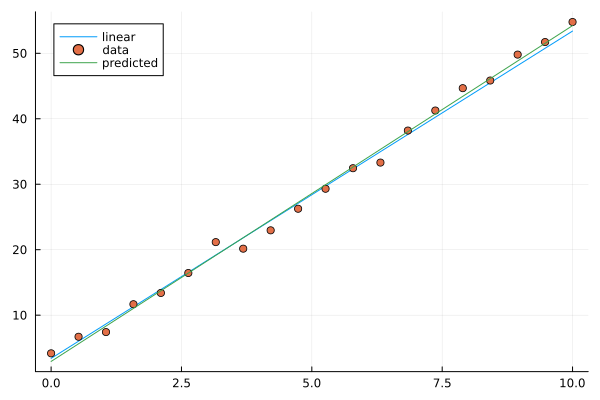
Image of linear model prediction. The example shown has intercept 2.9 and slope 5.1 (the result depends on random added noise).¶
Multivariate linear models are done in a similar way. Now we are fitting a multivariate linear function that minimizes the sum of squares error. In the following example we generate a linear function of 4 variables with random coefficients (normally distributed). On top of that we add normally distributed noise.
using Plots, GLM, DataFrames
n = 4
C = randn(n+1,1)
X = rand(100,n)
y = X*C[2:end] .+ C[1]
y_noisy = y .+ 0.01*randn(100,1)
df = DataFrame(cX1=X[:,1], cX2=X[:,2], cX3=X[:,3], cX4=X[:,4], cy=y_noisy[:,1])
lm2 = lm(@formula(cy ~ cX1+cX2+cX3+cX4), df)
display(lm2)
println("Coefficient vector:")
print(C)
cy ~ 1 + cX1 + cX2 + cX3 + cX4
Coefficients:
───────────────────────────────────────────────────────────────────────────
Coef. Std. Error t Pr(>|t|) Lower 95% Upper 95%
───────────────────────────────────────────────────────────────────────────
(Intercept) -1.21114 0.00350522 -345.52 <1e-99 -1.2181 -1.20418
cX1 2.42963 0.00375007 647.89 <1e-99 2.42218 2.43707
cX2 -0.399002 0.00354803 -112.46 <1e-99 -0.406046 -0.391959
cX3 -0.500017 0.00358613 -139.43 <1e-99 -0.507136 -0.492897
cX4 1.46202 0.00365527 399.98 <1e-99 1.45476 1.46928
───────────────────────────────────────────────────────────────────────────
Coefficient vector:
[-1.2045802862085417; 2.423632187920813; -0.4006938351986558; -0.5016991252146699; 1.4622712737941417;;]
Linear models with basis functions¶
Using the package GLM, we can incorporate linear models with basis functions in a convenient way, that is to model a function as a linear combination of given non-linear functions such polynomials or trigonometric functions.
using Plots, GLM, DataFrames
# try this polynomial
X = range(-6, 6, length=40)
y = X.^5 .- 34*X.^3 .+ 225*X
y_noisy = y .+ randn(40,)
plt = plot(X, y, label="polynomial")
plot!(X, y_noisy, seriestype=:scatter, label="data")
display(plt)
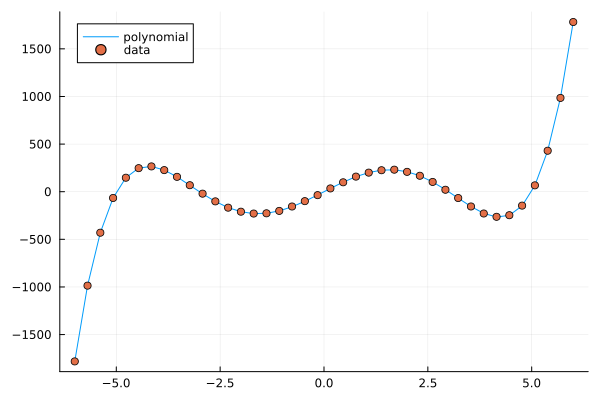
A polynomial function with noisy data.¶
Fitting a polynomial to data¶
Fitting a linear model with basis functions means that we try to approximate our function with for example a polynomial \(p(x)=ax^5+bx^4+cx^3+dx^2+ex+f\). We fit this model to the data in a least squares sense, which works since the model is linear in the coefficients \(a,b,c,d,e,f\), even though non-linear in the data \(x\). The degree of the polynomial needed to get a good fit is not known in advance but for this illustration we pick the same degree (5) as when generating the data.
using Plots, GLM, DataFrames
# try this polynomial
X = range(-6, 6, length=40)
y = X.^5 .- 34*X.^3 .+ 225*X
y_noisy = y .+ randn(40,)
plt = plot(X, y, label="polynomial")
plot!(X, y_noisy, seriestype=:scatter, label="data")
df = DataFrame(cX=X, cy=y_noisy)
lm3 = lm(@formula(cy ~ cX^5 + cX^4 + cX^3 + cX^2 + cX + 1), df)
y_pred = GLM.predict(lm3)
plot!(X, y_pred, label="predicted")
display(plt)
lm3
StatsModels.TableRegressionModel{LinearModel{GLM.LmResp{Vector{Float64}}, GLM.DensePredChol{Float64, LinearAlgebra.CholeskyPivoted{Float64, Matrix{Float64}, Vector{Int64}}}}, Matrix{Float64}}
cy ~ 1 + :(cX ^ 5) + :(cX ^ 4) + :(cX ^ 3) + :(cX ^ 2) + cX
Coefficients:
───────────────────────────────────────────────────────────────────────────────────────
Coef. Std. Error t Pr(>|t|) Lower 95% Upper 95%
───────────────────────────────────────────────────────────────────────────────────────
(Intercept) -0.0354375 0.343821 -0.10 0.9185 -0.734166 0.663291
cX ^ 5 1.00118 0.000551333 1815.92 <1e-85 1.00006 1.0023
cX ^ 4 -0.000992084 0.00169158 -0.59 0.5614 -0.00442979 0.00244563
cX ^ 3 -34.054 0.0236797 -1438.11 <1e-82 -34.1021 -34.0058
cX ^ 2 0.0230557 0.0571179 0.40 0.6890 -0.0930219 0.139133
cX 225.511 0.226822 994.22 <1e-76 225.05 225.972
───────────────────────────────────────────────────────────────────────────────────────

Fitting a polynomial to data.¶
Exercises¶
Let us illustrate linear regression on real data sets. The first dataset comes from the RDatasets package and are data from chemical experiments for the production of formaldehyde. The data columns are amount of Carbohydrate (ml) and Optical Density of a purple color on a spectrophotometer.
Sources:
Bennett, N. A. and N. L. Franklin (1954), Statistical Analysis in Chemistry and the Chemical Industry, New York: Wiley.
McNeil, D. R. (1977), Interactive Data Analysis, New York: Wiley.
Exercise
In the exerises below we use the packages GLM, RDatasets, Plots and DataFrames:
using Pkg
Pkg.add("GLM")
Pkg.add("RDatasets")
Pkg.add("Plots")
Pkg.add("DataFrames")
Formaldehyde example
To load the dataset, you can do:
using GLM, RDatasets, Plots
df = dataset("datasets", "Formaldehyde")
The columns of the dataframe are called Carb and OptDen for the amount of Carbohydrate and Optical Density. You can plot the data as follows:
plt = plot(df.Carb, df.OptDen, seriestype=:scatter, label="formaldehyde data")
display(plt)
To model Density as a linear function of Carbohydrate you can do as follows. The predict method is used to make model predictions.
model = fit(LinearModel, @formula(OptDen ~ Carb), df)
y_pred = GLM.predict(model)
To add the prediction to the plot and print the model results you can do:
plot!(df.Carb, y_pred, label="model")
display(plt)
model
A suggestion
using GLM, RDatasets, Plots
df = dataset("datasets", "Formaldehyde")
plt = plot(df.Carb, df.OptDen, seriestype=:scatter, label="formaldehyde data")
display(plt)
model = fit(LinearModel, @formula(OptDen ~ Carb), df)
y_pred = GLM.predict(model)
plot!(df.Carb, y_pred, label="model")
display(plt)
model

Changing hyperparameters
Take a look at the code in the example Fitting a polynomial to data. This fit is pretty tight.
What happens if you increase the noise by say 100 times?
What happens if if you use a degree 6 or 7 polynomial to fit the data instead?
You can try the second experiment with the original noise level.
Solution
You can change the following rows:
# y_noisy = y .+ randn(40,)
y_noisy = y .+ 100*randn(40,)
# lm3 = lm(@formula(cy ~ cX^5 + cX^4 + cX^3 + cX^2 + cX + 1), df)
lm3 = lm(@formula(cy ~ cX^7 + cX^6 + cX^5 + cX^4 + cX^3 + cX^2 + cX + 1), df)
Let us have a look at linear regression on real multidimensional data. For this we will use the Rdatasets package and the “trees” dataset, which consists of measurements on black cherry trees: girth, height and volume (see Atkinson, A. C. (1985) Plots, Transformations and Regression. Oxford University Press).
Black cherry trees
In this exercise we use also the package StatsBase:
using Pkg
Pkg.add("StatsBase")
Load the trees data set as follows:
using GLM, RDatasets, StatsBase, Plots
# Girth Height and Volume of Black Cherry Trees
trees = dataset("datasets", "trees")
df = trees
Randomly split the data set into a training and testing data set.
n_rows = size(df)[1]
rows_train = sample(1:n_rows, Int(round(n_rows*0.8)), replace=false)
rows_test = [x for x in 1:n_rows if ~(x in rows_train)]
L_train = df[rows_train,:]
L_test = df[rows_test,:]
It is reasonable to try to fit the logarithm of volume as a linear function of the logarithm of the height and logarithm of the girth. This is because the volume is presumably roughly proportional to the height times the girth squared.
# reasonable to look at logarithms since we can expect something like V~h*g^2 and
# log V = constant + log h + 2log g
model = fit(LinearModel, @formula(log(Volume) ~ log(Girth) + log(Height)), L_train)
Lastly, make predictions on the training set according to the model and compute the root mean squared error of the prediction (for instance on the training set).
Z = L_train
# Z = L_test
y_pred = GLM.predict(model, Z)
# Root Mean Squared Error
rmse = sqrt(sum((exp.(y_pred) - Z.Volume).^2)/size(Z)[1])
The whole script
using GLM, RDatasets, StatsBase, Plots
# Girth Height and Volume of Black Cherry Trees
trees = dataset("datasets", "trees")
df = trees
n_rows = size(df)[1]
rows_train = sample(1:n_rows, Int(round(n_rows*0.8)), replace=false)
rows_test = [x for x in 1:n_rows if ~(x in rows_train)]
L_train = df[rows_train,:]
L_test = df[rows_test,:]
# reasonable to look at logarithms since can expect something like V~h*r^2 and
# log V = constant + log h + 2log r
model = fit(LinearModel, @formula(log(Volume) ~ log(Girth) + log(Height)), L_train)
Z = L_train
# Z = L_test
y_pred = GLM.predict(model, Z)
# Root Mean Squared Error
rmse = sqrt(sum((exp.(y_pred) - Z.Volume).^2)/size(Z)[1])
println(rmse)
df
2.2631848027992776 # rmse
31×3 DataFrame
Row │ Girth Height Volume
│ Float64 Int64 Float64
─────┼──────────────────────────
1 │ 8.3 70 10.3
2 │ 8.6 65 10.3
3 │ 8.8 63 10.2
4 │ 10.5 72 16.4
5 │ 10.7 81 18.8
6 │ 10.8 83 19.7
7 │ 11.0 66 15.6
8 │ 11.0 75 18.2
9 │ 11.1 80 22.6
10 │ 11.2 75 19.9
11 │ 11.3 79 24.2
And so on (31 data points).
Trigonometric basis functions
Try a similar example as the polynomial above but with trigonometric functions \(y(x)=\cos(x)+\cos(2x)\). Here is a snippet that generates data for this example:
using Plots, GLM, DataFrames
X = range(-6, 6, length=100)
y = cos.(X) .+ cos.(2*X)
y_noisy = y .+ 0.1*randn(100,)
To make a dataframe out of the data and fit a linear model to it, you can do:
df = DataFrame(X=X, y=y_noisy)
lm1 = lm(@formula(y ~ 1 + cos(X) + cos(2*X) + cos(3*X) + cos(4*X)), df)
A suggestion.
using Plots, GLM, DataFrames
# try a cosine combination
X = range(-6, 6, length=100)
y = cos.(X) .+ cos.(2*X)
y_noisy = y .+ 0.1*randn(100,)
plt = plot(X, y, label="waveform")
plot!(X, y_noisy, seriestype=:scatter, label="data")
display(plt)
df = DataFrame(X=X, y=y_noisy)
lm1 = lm(@formula(y ~ 1 + cos(X) + cos(2*X) + cos(3*X) + cos(4*X)), df)
StatsModels.TableRegressionModel{LinearModel{GLM.LmResp{Vector{Float64}}, GLM.DensePredChol{Float64, LinearAlgebra.CholeskyPivoted{Float64, Matrix{Float64}, Vector{Int64}}}}, Matrix{Float64}}
y ~ 1 + :(cos(X)) + :(cos(2X)) + :(cos(3X)) + :(cos(4X))
Coefficients:
────────────────────────────────────────────────────────────────────────────
Coef. Std. Error t Pr(>|t|) Lower 95% Upper 95%
────────────────────────────────────────────────────────────────────────────
(Intercept) 0.0130408 0.0108222 1.21 0.2312 -0.00844393 0.0345256
cos(X) 0.981561 0.015653 62.71 <1e-78 0.950486 1.01264
cos(2X) 0.984984 0.0156219 63.05 <1e-78 0.953971 1.016
cos(3X) -0.0135547 0.015573 -0.87 0.3863 -0.044471 0.0173616
cos(4X) 0.0148532 0.0155105 0.96 0.3407 -0.015939 0.0456454
────────────────────────────────────────────────────────────────────────────
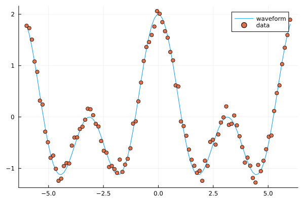
Fitting trigonometric functions to data.¶
Loading data¶
We will now have a look at a climate data set containing daily mean temperature, humidity, wind speed and mean pressure at a location in Delhi India over a period of several years. The data set is available here. In the context of the Delhi dataset we have borrowed some elements of Sebastian Callh’s personal blog post Forecasting the weather with neural ODEs found here.
using DataFrames, CSV, Plots, Statistics
# data_path = <path-to-data-file>
# a string, full path to data file DailyDelhiClimateTrain.csv
# uploaded in julia-for-hpda/content/data
df_train = CSV.read(data_path, DataFrame)
df_train
M = [df_train.meantemp df_train.humidity df_train.wind_speed df_train.meanpressure]
plottitles = ["meantemp" "humidity" "wind_speed" "meanpressure"]
plotylabels = ["C°" "g/m^3?" "km/h?" "hPa"]
# color=[1 2 3 4] gives default colors
plot(M, layout=(4,1), color=[1 2 3 4], legend=false, title=plottitles,
xlabel="time (days)", ylabel=plotylabels, size=(800,800))
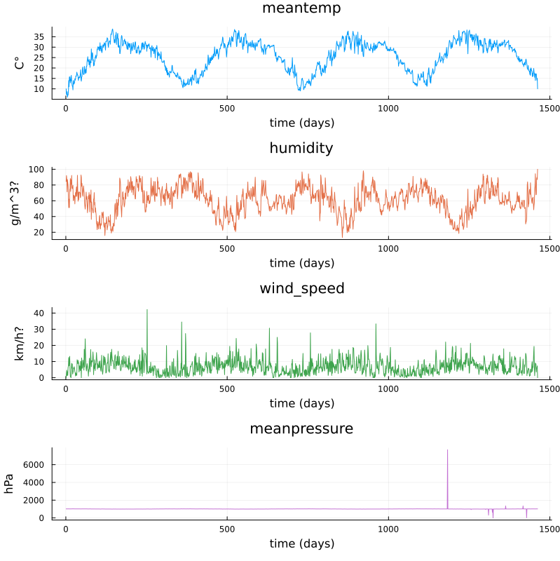
Plots of measurements.¶
The mean pressure data field seems to contain some unreasonably large values. Let us filter those out and consider these missing data.
using DataFrames, CSV, Plots, Statistics
# data_path = <path-to-data-file>
# a string, full path to data file DailyDelhiClimateTrain.csv
# uploaded in julia-for-hpda/content/data
df_train = CSV.read(data_path, DataFrame)
M = [df_train.meantemp df_train.humidity df_train.wind_speed df_train.meanpressure]
plottitles = ["meantemp" "humidity" "wind_speed" "meanpressure"]
plotylabels = ["C°" "g/m^3?" "km/h?" "hPa"]
df_train[df_train.meanpressure .< 950,:meanpressure] .= NaN
df_train[1050 .< df_train.meanpressure,:meanpressure] .= NaN
M = [df_train.meantemp df_train.humidity df_train.wind_speed df_train.meanpressure]
# color=[1 2 3 4] gives default colors
plt = plot(M, layout=(4,1), color=[1 2 3 4], legend=false, title=plottitles,
xlabel="time (days)", ylabel=plotylabels, size=(800,800))
display(plt)
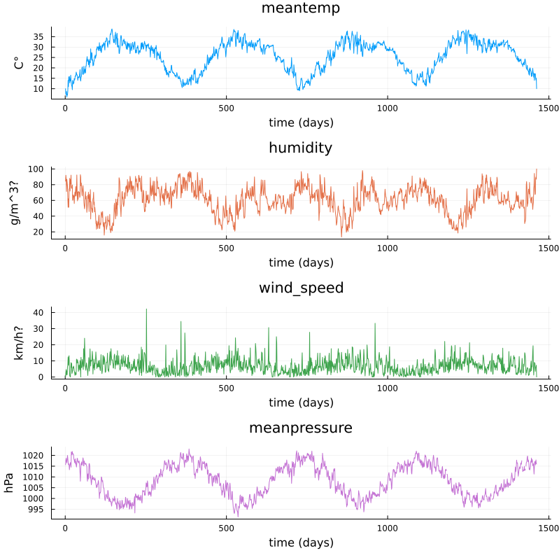
Plots of cleaned up data.¶
Non-linear regression and time-series prediction¶
In this section we will have a look at non-linear regression methods.
Climate data¶
Now we will consider the problem of predicting one of the climate variables from the others, for example temperature from humidity, wind speed and pressure. In the process we will see how to set up and train a neural network in Julia using the package Flux.
Background on neural networks can be found here download slides.
Some terminology relating to neural networks
Neural networks can be used to approximate non-linear functions. We define the network as a chain (composition) of so-called dense layers. The performance of the network on the training data is measured in terms of the loss function. In our case this is the mean squared error (mse), which is an analog of the sum of squares error used in linear regression. The square root of the mean squared error is called root mean squared error (rmse). The training of the network is the process of minimizing the loss function. Here, this is done with the gradient descent method using an optimizer (in this case ADAM). Gradient descent is an iterative method which repeatedly takes a step in the negative gradient direction of the loss function. Each such iteration is known as an epoch.
using DataFrames, CSV, Plots, Statistics, Dates, GLM, Flux, StatsBase
using MLJ: shuffle, partition
using Flux: train!
# data_path = <path-to-data-file>
# a string, full path to data file DailyDelhiClimateTrain.csv
df = CSV.read(data_path, DataFrame)
# clean up data, drop rows
df = filter(:meanpressure => x -> 950 < x < 1050, df)
topredict = "mean temp"
y = df.meantemp
mhumid = mean(df.humidity)
mspeed = mean(df.wind_speed)
mpress = mean(df.meanpressure)
X = [(df.humidity .- mhumid) (df.wind_speed .- mspeed) (df.meanpressure .- mpress)]
# X = [(df.humidity .- 50) (df.wind_speed .- 5) (df.meanpressure .- 1000)]
# can convert data to Float32
# aviods Warning and faster training
# X = Matrix{Float32}(X)
# y = Vector{Float32}(y)
z = eachindex(y)
# 70:30 split in training and testing
# shuffle or straight split
train, test = partition(z, 0.7, shuffle=false)
X_train = X[train, :]
y_train = y[train, :]
X_test = X[test, :]
y_test = y[test, :]
function draw_results(X_train, X_test, y_train, y_test, model)
y_pred_train = model(X_train')'
plt = scatter(train, y_train, title="Non-linear model of "*topredict, label="data train")
scatter!(train, y_pred_train, label="prediction train")
y_pred_test = model(X_test')'
scatter!(test, y_test, label="data test")
scatter!(test, y_pred_test, label="prediction test")
display(plt)
rmse_train = sqrt(Flux.Losses.mse(y_train, y_pred_train))
rmse_test = sqrt(Flux.Losses.mse(y_test, y_pred_test))
println(topredict)
println("rmse train: ", rmse_train)
println("rmse test: ", rmse_test)
end
init=Flux.glorot_uniform()
model = Flux.Chain(
Flux.Dense(3, 10, tanh, init=init, bias=true),
# Flux.Dense(10, 10, tanh, init=init, bias=true),
# Flux.Dropout(0.04),
Flux.Dense(10, 1, init=init, bias=true)
)
loss(model, tX, ty) = Flux.Losses.mse(model(tX'), ty')
data = [(X_train, y_train)]
opt_state = Flux.setup(Flux.Adam(0.01), model) # learning rate 0.01
train_loss = []
test_loss = []
n_epochs = 1000
# to animate training
# replace the rest of the code from here with snippet below
for epoch in 1:n_epochs
train!(loss, model, data, opt_state)
ltrain = sqrt(loss(model, X_train, y_train))
ltest = sqrt(loss(model, X_test, y_test))
push!(train_loss, ltrain)
push!(test_loss, ltest)
println("Epoch: $epoch, rmse train/test: ", ltrain, " ", ltest)
end
draw_results(X_train, X_test, y_train, y_test, model)
plt = plot(train_loss, title="Losses (root mean square error)", label="training", xlabel="epochs")
plot!(test_loss, label="test")
display(plt)

Data points and predictions.¶
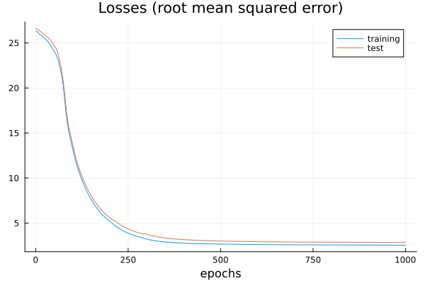
The losses during training.¶
Epoch: 997, rmse train/test: 2.321958298905668 2.8623720534428925
Epoch: 998, rmse train/test: 2.3217000741076217 2.862347448996424
Epoch: 999, rmse train/test: 2.321443844030064 2.8623211237184116
Epoch: 1000, rmse train/test: 2.3211893059494684 2.8622934109353464
mean temp
rmse train: 2.3211893059494684
rmse_test: 2.8622934109353464
It is interesting to animate the predictions during the training of the neural network. This will also give us a quick look at animation in Julia.
# instead of the training loop above
# do this to save an animation as a gif
anim = @animate for epoch in 1:n_epochs
train!(loss, model, data, opt_state)
ltrain = sqrt(loss(model, X_train, y_train))
ltest = sqrt(loss(model, X_test, y_test))
push!(train_loss, ltrain)
push!(test_loss, ltest)
println("Epoch: $epoch, rmse train/test: ", ltrain, " ", ltest)
y_pred_train = model(X_train')'
y_pred_test = model(X_test')'
scatter(train, y_train, title="Non-linear model of "*topredict, label="data train", yrange=[0,40])
scatter!(train, y_pred_train, label="prediction train")
scatter!(test, y_test, label="data test")
scatter!(test, y_pred_test, label="prediction test")
end every 2 # include every second frame
gif(anim, "anim_points_training.gif")
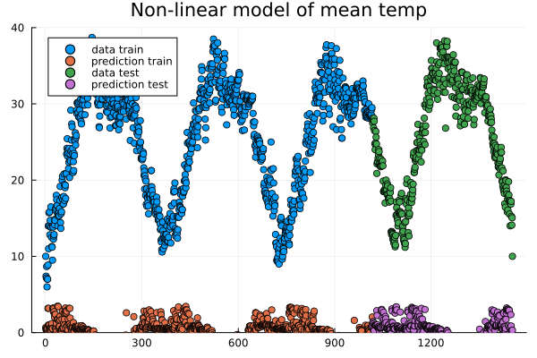
Evolution of prediction during training.¶
Let us also check how well a linear model is doing in this case. It turns out it is doing almost as good as the non-linear model, and perhaps better at capturing the peaks.
using DataFrames, CSV, Plots, Statistics, Dates, GLM, Flux, StatsBase
using MLJ: shuffle, partition
using Flux: train!
# data_path = <path-to-data-file>
# a string, full path to data file DailyDelhiClimateTrain.csv
df = CSV.read(data_path, DataFrame)
# clean up data
df = filter(:meanpressure => x -> 950 < x < 1050, df)
topredict = "mean temp"
y = df.meantemp
X = [df.humidity df.wind_speed df.meanpressure]
# X = [(df.humidity .- 50) (df.wind_speed .- 5) (df.meanpressure .- 1000)]
z = eachindex(y)
# 70:30 split in training and testing
# shuffle or straight split
train, test = partition(z, 0.7, shuffle=false)
X_train = X[train, :]
y_train = y[train, :]
X_test = X[test, :]
y_test = y[test, :]
df_model = DataFrame(cX1=X_train[:,1], cX2=X_train[:,2], cX3=X_train[:,3], cy=y_train[:,1])
model_lin = lm(@formula(cy ~ 1+cX1+cX2+cX3), df_model)
function draw_results_lin(X_train, X_test, y_train, y_test, model)
model = model_lin
Z_train = [ones(size(X_train,1)) X_train]
y_pred_train = GLM.predict(model, Z_train)
# y_train = y_train[:,1]
plt = scatter(train, y_train, title="Linear model of "*topredict, label="data train")
scatter!(train, y_pred_train, label="prediction train")
Z_test = [ones(size(X_test,1)) X_test]
y_pred_test = GLM.predict(model, Z_test)
# y_test = y_test[:,1]
scatter!(test, y_test, label="data test")
scatter!(test, y_pred_test, label="prediction test")
display(plt)
rmse_train = sqrt(Flux.Losses.mse(y_train, y_pred_train))
rmse_test = sqrt(Flux.Losses.mse(y_test, y_pred_test))
println(topredict)
println("rmse train: ", rmse_train)
println("rmse test: ", rmse_test)
end
draw_results_lin(X_train, X_test, y_train, y_test, model_lin)
mean temp
rmse train: 2.61686030150272
rmse_test: 3.047019624551555
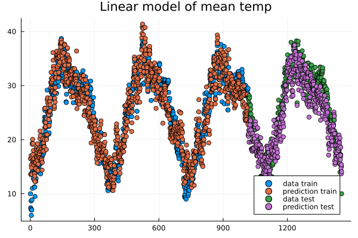
Linear model predictions.¶
Airfoil data set¶
Let us now illustrate how to use the package MLJ for non-linear regression. We will use a data set called Airfoil Self-Noise which may be downloaded from the UC Irvine Machine Learning repository here. This is a data set from NASA created by T. Brooks, D. Pope and M. Marcolini obtained from aerodynamic and acoustic tests of airfoil blade sections.
Below we are downloading the data from Rupak Chakraborty’s gihub account where UC Irvine data has been collected. The code example below is an adaptation of the tutorial by Ashrya Agrawal.
The fields of this data set are:
frequency (Hz),
angle of attack (degrees),
chord length (m),
free-stream velocity (m/s),
suction side displacement thickness (m),
scaled sound pressure level (db).
We will consider the problem of predicting scaled sound pressure level from the others.
using GLM, MLJ
import MLJDecisionTreeInterface
import DataFrames
using CSV
using HTTP
path = "https://raw.githubusercontent.com/rupakc/UCI-Data-Analysis/master/"*
"Airfoil%20Dataset/airfoil_self_noise.dat"
req = HTTP.get(path);
df = CSV.read(req.body, DataFrames.DataFrame; header=[
"Frequency","Attack_Angle","Chord_Length",
"Free_Velocity","Suction_Side","Scaled_Sound"
]
);
y_column = :Scaled_Sound
X_columns = 1:5
formula_lin = @formula(Scaled_Sound ~ 1 + Frequency + Attack_Angle + Chord_Length +
Free_Velocity + Suction_Side)
train, test = partition(1:size(df, 1), 0.7, shuffle=true)
df_train = df[train,:]
df_test = df[test,:]
model_lin = GLM.fit(LinearModel, formula_lin, df_train)
X_test = Matrix(df_test[:, X_columns])
y_test_pred = GLM.predict(model_lin, [ones(size(df_test, 1)) X_test])
y_test = df_test[:, y_column]
rmse_lin = rms(y_test, y_test_pred)
# non-linear model
X = df[:, X_columns]
y = df[:,y_column]
# X = MLJ.transform(MLJ.fit!(machine(Standardizer(), X)), X)
train, test = partition(eachindex(y), 0.7, shuffle=true)
model_class = @load DecisionTreeRegressor pkg=DecisionTree
# model_class = @load RandomForestRegressor pkg=DecisionTree
model = model_class()
mach = machine(model, X, y)
MLJ.fit!(mach, rows=train)
pred_test = MLJ.predict(mach, rows=test)
rmse_nlin = rms(pred_test, y[test])
# Non-linear model is significantly better than linear model.
println()
println("rmse linear $rmse_lin")
println("rmse non-linear $rmse_nlin")
println()
# get more model suggestions by changing type of frequency
# coerce!(X, :Frequency=>Continuous)
# get model suggestions
# for model in models(matching(X, y))
# print("Model Name: " , model.name , " , Package: " , model.package_name , "\n")
# end
rmse linear 5.003216839003985
rmse non-linear 2.9503907573431922
Simple regression example¶
To illustrate more usages of MLJ and various regression models consider the following simple example.
using MLJ, DataFrames
import MLJDecisionTreeInterface
import MLJScikitLearnInterface
using Plots
Npoints = 200
noise_level = 0.1
train_frac = 0.7
X = range(-6, 6, length=Npoints)
y = cos.(X) .+ cos.(2*X) .+ 0.01*X.^3
y = y .+ noise_level*randn(Npoints,)
X = DataFrame(cX=X)
train, test = MLJ.partition(eachindex(y), train_frac, shuffle=true);
# model_class = @load DecisionTreeRegressor pkg=DecisionTree
# model_class = @load RandomForestRegressor pkg=DecisionTree
model_class = @load GaussianProcessRegressor pkg=MLJScikitLearnInterface
model = model_class()
mach = machine(model, X, y)
MLJ.fit!(mach, rows=train)
pred_all = MLJ.predict(mach)
pred_train = MLJ.predict(mach, rows=train)
# prediction error train
err_train = rms(pred_train, y[train])
pred_test = MLJ.predict(mach, rows=test)
# prediction error test
err_test = rms(pred_test, y[test])
plt = plot(X.cX, pred_all, label="prediction", title="Simple regression test")
scatter!(X.cX[train], y[train], label="train", markersize=3)
scatter!(X.cX[test], y[test], label="test", markersize=3)
display(plt)
# print models that can be used to model the data
# for model in models(matching(X, y))
# print("Model Name: " , model.name , " , Package: " , model.package_name , "\n")
# end
# print root mean square errors of predictions
println()
println("rmse non-linear train $err_train")
println("rmse non-linear test $err_test")
println()
# expect output something like
# rmse non-linear train 0.086
# rmse non-linear test 0.1311
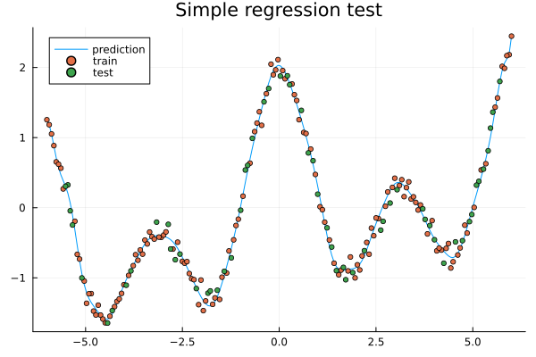
Exercises¶
Exercise
In the exercises below we use some packages which may be intalled as follows if needed.
using Pkg
Pkg.add("DataFrames")
Pkg.add("MLJ")
Pkg.add("MLJDecisionTreeInterface")
Pkg.add("MLJScikitLearnInterface")
Pkg.add("Plots")
Simple regression 1a
Run the code in the Simple regression example above and see what prediction errors you get. Look through the code and think about what the various steps do.
Simple regression 1b
In the Simple regression example above, what happens if you let the data be partitioned in train and test data without shuffling? You can do this by changing the following line:
# train, test = MLJ.partition(eachindex(y), train_frac, shuffle=true);
train, test = MLJ.partition(eachindex(y), train_frac, shuffle=false);
Try the different models (Gaussian process, Decision tree, Random forest), how do they perform on the test data in case of shuffling and non-shuffling?
Simple regression 2a
In the Simple regression example, experiment with the settings to change the sampling frequency, level of noise imposed on the data and fraction of the data that is used for training (the rest is used for testing).
Change parameters
You can change the following parameters.
Npoints = 200
noise_level = 0.1
train_frac = 0.7
Simple regression 2b
In the Simple regression example, reset the settings:
Npoints = 200
noise_level = 0.1
train_frac = 0.7
What happens to the errors and the prediction (blue curve in the plot) when you decrease the training fraction to 0.3, 0.2 or 0.1?
Now what happens if you increase the number of points?
Can you explain the results?
Change training fraction
It seems like the prediction gets really bad when the training fraction is below 0.2 but if we add more points we have enough training data to get a good predicition.
Simple regression 3
In the Simple regression example, make your own synthetic data set and try it out in the script. The performance will depend a lot on the data and the model.
Change function
# replace
# y = cos.(X) .+ cos.(2*X) .+ 0.01*X.^3
# with your own function, for example
y = cos.(X) .+ sin.(2*X).^2 .+ 0.01*X.^3
Simple regression 4
Try some other models to train on the data from the Simple regression example. To see a list of available models one can outcomment the following lines.
# print models that can be used to model the data
for model in models(matching(X, y))
print("Model Name: " , model.name , " , Package: " , model.package_name , "\n")
end
Change model class
You can change the model class to one of the models in the previous list.
# replace the model_class
# model_class = @load GaussianProcessRegressor pkg=MLJScikitLearnInterface
# with for exmple random forest
model_class = @load RandomForestRegressor pkg=DecisionTree
# or a decision tree
# model_class = @load DecisionTreeRegressor pkg=DecisionTree
For some models you may have to install the package mentioned and an MLJ interface (MLJDecisionTreeInterface, MLJScikitLearnInterface or similar).
The list of models from above will be something like:
Model Name: ARDRegressor , Package: MLJScikitLearnInterface
Model Name: AdaBoostRegressor , Package: MLJScikitLearnInterface
Model Name: BaggingRegressor , Package: MLJScikitLearnInterface
Model Name: BayesianRidgeRegressor , Package: MLJScikitLearnInterface
Model Name: CatBoostRegressor , Package: CatBoost
Model Name: ConstantRegressor , Package: MLJModels
Model Name: DecisionTreeRegressor , Package: BetaML
Model Name: DecisionTreeRegressor , Package: DecisionTree
Model Name: DeterministicConstantRegressor , Package: MLJModels
Model Name: DummyRegressor , Package: MLJScikitLearnInterface
Model Name: ElasticNetCVRegressor , Package: MLJScikitLearnInterface
Model Name: ElasticNetRegressor , Package: MLJLinearModels
Model Name: ElasticNetRegressor , Package: MLJScikitLearnInterface
Model Name: EpsilonSVR , Package: LIBSVM
Model Name: EvoLinearRegressor , Package: EvoLinear
Model Name: EvoSplineRegressor , Package: EvoLinear
Model Name: EvoTreeGaussian , Package: EvoTrees
Model Name: EvoTreeMLE , Package: EvoTrees
Model Name: EvoTreeRegressor , Package: EvoTrees
Model Name: ExtraTreesRegressor , Package: MLJScikitLearnInterface
Model Name: GaussianMixtureRegressor , Package: BetaML
Model Name: GaussianProcessRegressor , Package: MLJScikitLearnInterface
Model Name: GradientBoostingRegressor , Package: MLJScikitLearnInterface
Model Name: HistGradientBoostingRegressor , Package: MLJScikitLearnInterface
Model Name: HuberRegressor , Package: MLJLinearModels
Model Name: HuberRegressor , Package: MLJScikitLearnInterface
Model Name: KNNRegressor , Package: NearestNeighborModels
Model Name: KNeighborsRegressor , Package: MLJScikitLearnInterface
Model Name: KPLSRegressor , Package: PartialLeastSquaresRegressor
Model Name: LADRegressor , Package: MLJLinearModels
Model Name: LGBMRegressor , Package: LightGBM
Model Name: LarsCVRegressor , Package: MLJScikitLearnInterface
Model Name: LarsRegressor , Package: MLJScikitLearnInterface
Model Name: LassoCVRegressor , Package: MLJScikitLearnInterface
Model Name: LassoLarsCVRegressor , Package: MLJScikitLearnInterface
Model Name: LassoLarsICRegressor , Package: MLJScikitLearnInterface
Model Name: LassoLarsRegressor , Package: MLJScikitLearnInterface
Model Name: LassoRegressor , Package: MLJLinearModels
Model Name: LassoRegressor , Package: MLJScikitLearnInterface
Model Name: LinearRegressor , Package: GLM
Model Name: LinearRegressor , Package: MLJLinearModels
Model Name: LinearRegressor , Package: MLJScikitLearnInterface
Model Name: LinearRegressor , Package: MultivariateStats
Model Name: NeuralNetworkRegressor , Package: BetaML
Model Name: NeuralNetworkRegressor , Package: MLJFlux
Model Name: NuSVR , Package: LIBSVM
Model Name: OrthogonalMatchingPursuitCVRegressor , Package: MLJScikitLearnInterface
Model Name: OrthogonalMatchingPursuitRegressor , Package: MLJScikitLearnInterface
Model Name: PLSRegressor , Package: PartialLeastSquaresRegressor
Model Name: PartLS , Package: PartitionedLS
Model Name: PartLS , Package: PartitionedLS
Model Name: PassiveAggressiveRegressor , Package: MLJScikitLearnInterface
Model Name: QuantileRegressor , Package: MLJLinearModels
Model Name: RANSACRegressor , Package: MLJScikitLearnInterface
Model Name: QuantileRegressor , Package: MLJLinearModels
Model Name: RANSACRegressor , Package: MLJScikitLearnInterface
Model Name: RANSACRegressor , Package: MLJScikitLearnInterface
Model Name: RandomForestRegressor , Package: BetaML
Model Name: RandomForestRegressor , Package: DecisionTree
Model Name: RandomForestRegressor , Package: DecisionTree
Model Name: RandomForestRegressor , Package: MLJScikitLearnInterface
Model Name: RandomForestRegressor , Package: MLJScikitLearnInterface
Model Name: RidgeCVRegressor , Package: MLJScikitLearnInterface
Model Name: RidgeCVRegressor , Package: MLJScikitLearnInterface
Model Name: RidgeRegressor , Package: MLJLinearModels
Model Name: RidgeRegressor , Package: MLJScikitLearnInterface
Model Name: RidgeRegressor , Package: MultivariateStats
Model Name: RobustRegressor , Package: MLJLinearModels
Model Name: SGDRegressor , Package: MLJScikitLearnInterface
Model Name: SRRegressor , Package: SymbolicRegression
Model Name: SVMLinearRegressor , Package: MLJScikitLearnInterface
Model Name: SVMNuRegressor , Package: MLJScikitLearnInterface
Model Name: SVMRegressor , Package: MLJScikitLearnInterface
Model Name: StableForestRegressor , Package: SIRUS
Model Name: RidgeRegressor , Package: MLJLinearModels
Model Name: RidgeRegressor , Package: MLJScikitLearnInterface
Model Name: RidgeRegressor , Package: MultivariateStats
Model Name: RobustRegressor , Package: MLJLinearModels
Model Name: SGDRegressor , Package: MLJScikitLearnInterface
Model Name: SRRegressor , Package: SymbolicRegression
Model Name: SVMLinearRegressor , Package: MLJScikitLearnInterface
Model Name: SVMNuRegressor , Package: MLJScikitLearnInterface
Model Name: SVMRegressor , Package: MLJScikitLearnInterface
Model Name: StableForestRegressor , Package: SIRUS
Model Name: SGDRegressor , Package: MLJScikitLearnInterface
Model Name: SRRegressor , Package: SymbolicRegression
Model Name: SVMLinearRegressor , Package: MLJScikitLearnInterface
Model Name: SVMNuRegressor , Package: MLJScikitLearnInterface
Model Name: SVMRegressor , Package: MLJScikitLearnInterface
Model Name: StableForestRegressor , Package: SIRUS
Model Name: SRRegressor , Package: SymbolicRegression
Model Name: SVMLinearRegressor , Package: MLJScikitLearnInterface
Model Name: SVMNuRegressor , Package: MLJScikitLearnInterface
Model Name: SVMRegressor , Package: MLJScikitLearnInterface
Model Name: StableForestRegressor , Package: SIRUS
Model Name: SVMLinearRegressor , Package: MLJScikitLearnInterface
Model Name: SVMNuRegressor , Package: MLJScikitLearnInterface
Model Name: SVMRegressor , Package: MLJScikitLearnInterface
Model Name: StableForestRegressor , Package: SIRUS
Model Name: SVMNuRegressor , Package: MLJScikitLearnInterface
Model Name: SVMRegressor , Package: MLJScikitLearnInterface
Model Name: StableForestRegressor , Package: SIRUS
Model Name: SVMRegressor , Package: MLJScikitLearnInterface
Model Name: StableForestRegressor , Package: SIRUS
Model Name: StableForestRegressor , Package: SIRUS
Model Name: StableRulesRegressor , Package: SIRUS
Model Name: TheilSenRegressor , Package: MLJScikitLearnInterface
Model Name: XGBoostRegressor , Package: XGBoost
Simple regression 5
In the Simple regression example, try the decision tree model:
# replace the model_class
# model_class = @load GaussianProcessRegressor pkg=ScikitLearn
# with for exmple random forest
model_class = @load DecisionTreeRegressor pkg=DecisionTree
Note the locally constant (step wise) behavior of the prediction. What happens to the prediction curve if you increase the number of data points?
When you increase the number of points the prediction curve may be hard see because of all the plotted points and you can comment out the lines plotting the points:
# scatter!(X.cX[train], y[train], label="train", markersize=3)
# scatter!(X.cX[test], y[test], label="test", markersize=3)
Air foil continued
Return to the Airfoil data set example above and run the code for it. To run the airfoil example you need the packages GLM, MLJ, MLJDecisionTreeInterface, DataFrames, CSV and HTTP.
Try some different models to model the data. You can list available models as follows at the end of the script. For some models you may have to install the package mentioned and an MLJ interface (MLJDecisionTreeInterface, MLJScikitLearnInterface or similar).
for model in models(matching(X, y))
print("Model Name: " , model.name , " , Package: " , model.package_name , "\n")
end
# get more model suggestions by changing type of the Frequency field from Int64 to Float64
coerce!(X, :Frequency=>Continuous)
for model in models(matching(X, y))
print("Model Name: " , model.name , " , Package: " , model.package_name , "\n")
end
Some Fourier based models (extra material)¶
In the exercises above you fitted trigometric basis functions to data using a linear model.
using Plots, GLM, DataFrames
# try a cosine combination
X = range(-6, 6, length=100)
y = cos.(X) .+ cos.(2*X)
y_noisy = y .+ 0.1*randn(100,)
plt = plot(X, y, label="waveform")
plot!(X, y_noisy, seriestype=:scatter, label="data")
display(plt)
df = DataFrame(X=X, y=y_noisy)
lm1 = lm(@formula(y ~ 1 + cos(X) + cos(2*X) + cos(3*X) + cos(4*X)), df)
StatsModels.TableRegressionModel{LinearModel{GLM.LmResp{Vector{Float64}}, GLM.DensePredChol{Float64, LinearAlgebra.CholeskyPivoted{Float64, Matrix{Float64}, Vector{Int64}}}}, Matrix{Float64}}
y ~ 1 + :(cos(X)) + :(cos(2X)) + :(cos(3X)) + :(cos(4X))
Coefficients:
────────────────────────────────────────────────────────────────────────────
Coef. Std. Error t Pr(>|t|) Lower 95% Upper 95%
────────────────────────────────────────────────────────────────────────────
(Intercept) 0.0130408 0.0108222 1.21 0.2312 -0.00844393 0.0345256
cos(X) 0.981561 0.015653 62.71 <1e-78 0.950486 1.01264
cos(2X) 0.984984 0.0156219 63.05 <1e-78 0.953971 1.016
cos(3X) -0.0135547 0.015573 -0.87 0.3863 -0.044471 0.0173616
cos(4X) 0.0148532 0.0155105 0.96 0.3407 -0.015939 0.0456454
────────────────────────────────────────────────────────────────────────────
Fitting trigonometric functions to data.¶
Note the similarity to Fourier analysis. Let’s see how you do the Fourier transform of data using the package FFTW. We will use data (waveform) similar to that of the last example.
using Plots, GLM, DataFrames, FFTW
L = 100
Fs = 100
T = 1/Fs
X = (0:L-1)*T;
y = cos.(2*pi*X) .+ cos.(5*2*pi*X)
y_noisy = y .+ 0.1*randn(L)
plt = plot(X, y, label="waveform")
plot!(X, y_noisy, seriestype=:scatter, label="data")
display(plt)
df = DataFrame(X1=cos.(2*pi*X), X2=cos.(2*2*pi*X), X3=cos.(3*2*pi*X), X4=cos.(4*2*pi*X), X5=cos.(5*2*pi*X), X6=cos.(6*2*pi*X), y=y_noisy)
lm1 = lm(@formula(y ~ 1 + X1 + X2 + X3 + X4 + X5 + X6), df)
display(lm1)
# use function fft (Fast Fourier Transform)
y_fft = fft(y_noisy)
# some housekeeping
P2 = abs.(y_fft/L)
P1 = P2[1:Int(L/2)+1]
P1[2:end-1] = 2*P1[2:end-1]
f = (Fs/L)*(0:Int(L/2))
plt = plot(f, P1, label="freqs")
# zooming in a bit on the frequency graph
# plt = plot(f, P1, label="freqs", xlims=(0,10), xticks = 0:10)
display(plt)
StatsModels.TableRegressionModel{LinearModel{GLM.LmResp{Vector{Float64}}, GLM.DensePredChol{Float64, LinearAlgebra.CholeskyPivoted{Float64, Matrix{Float64}, Vector{Int64}}}}, Matrix{Float64}}
y ~ 1 + X1 + X2 + X3 + X4 + X5 + X6
Coefficients:
──────────────────────────────────────────────────────────────────────────────
Coef. Std. Error t Pr(>|t|) Lower 95% Upper 95%
──────────────────────────────────────────────────────────────────────────────
(Intercept) 0.00221541 0.0102879 0.22 0.8300 -0.0182143 0.0226451
X1 0.999929 0.0145493 68.73 <1e-80 0.971037 1.02882
X2 -0.00803306 0.0145493 -0.55 0.5822 -0.036925 0.0208589
X3 -0.0319954 0.0145493 -2.20 0.0304 -0.0608874 -0.00310339
X4 -0.0288931 0.0145493 -1.99 0.0500 -0.0577851 -1.16669e-6
X5 1.01005 0.0145493 69.42 <1e-81 0.981157 1.03894
X6 0.00464845 0.0145493 0.32 0.7501 -0.0242435 0.0335404
──────────────────────────────────────────────────────────────────────────────
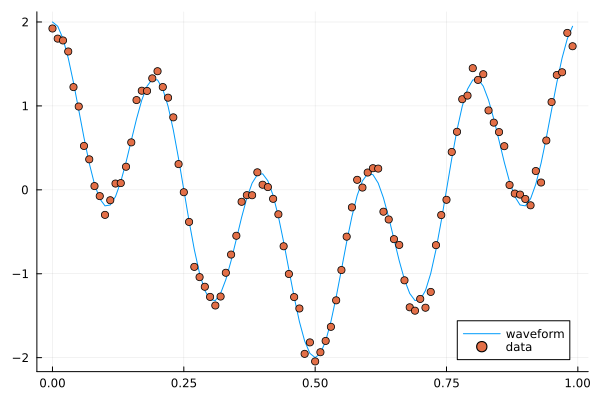
A combination of cosines with noise.¶

The Fourier coeffients from FFT, the frequencies are 1 and 5.¶

Zooming in a bit on the frequency graph.¶
Since the climate data explored above is periodic we may attempt a simple model based on Fourier transforms. To have a cleaner presentation we aggregate the data over each month.
using DataFrames, CSV, DataFrames, Plots, Statistics, Dates, GLM, StatsBase
# data_path = <path-to-data-file>
# a string, full path to data file DailyDelhiClimateTrain.csv
df_train = CSV.read(data_path, DataFrame)
# clean up data
df_train[:,:meanpressure] = [ abs(x-1000) < 50 ? x : mean(df_train.meanpressure) for x in df_train.meanpressure]
# add year and month fields
df_train[:,:year] = Float64.(year.(df_train[:,:date]))
df_train[:,:month] = Float64.(month.(df_train[:,:date]))
df_train_m = combine(groupby(df_train, [:year, :month]), :meantemp => mean, :humidity => mean,
:wind_speed => mean, :meanpressure => mean)
M_m = [df_train_m.meantemp_mean df_train_m.humidity_mean df_train_m.wind_speed_mean df_train_m.meanpressure_mean]
plottitles = ["meantemp" "meanhumidity" "meanwindspeed" "meanpressure"]
plotylabels = ["C°" "g/m^3?" "km/h?" "hPa"]
plt = scatter(M_m, layout=(4,1), color=[1 2 3 4], legend=false, title=plottitles, xlabel="time (months)", ylabel=plotylabels, size=(800,800))
display(plt)
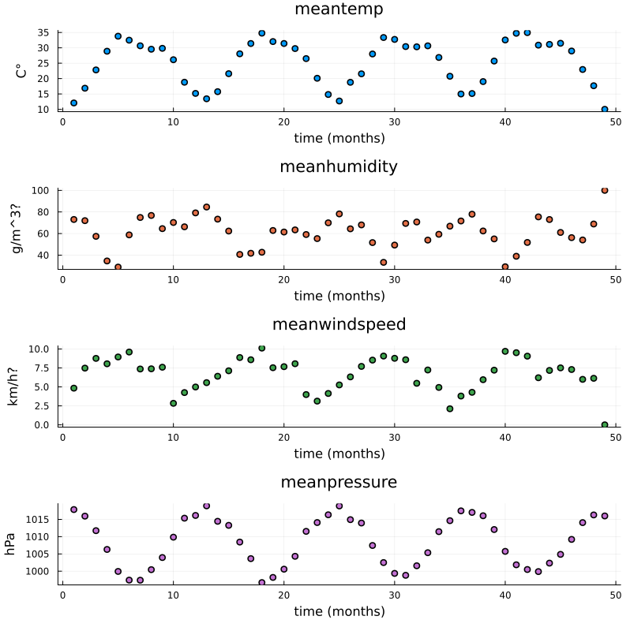
Aggregated data, mean value for each month.¶
Now, the Fourier transform gives us the frequency components of the signals. Let us take the mean temperature as an example.
using FFTW
# just to have even number of samples for simplicity
df_train_m = df_train_m[2:end,:]
# normalize for better exposition of frequencies
the_mean = mean(df_train_m.meantemp_mean)
y = df_train_m.meantemp_mean .- the_mean
L = size(df_train_m)[1]
Fs = 1
T = 1/Fs
y_fft = fft(y)
P2 = abs.(y_fft/L)
P1 = P2[1:Int(L/2)+1]
P1[2:end-1] = 2*P1[2:end-1]
f = (Fs/L)*(0:Int(L/2))
plt = plot(f, P1, label="freqs")
display(plt)
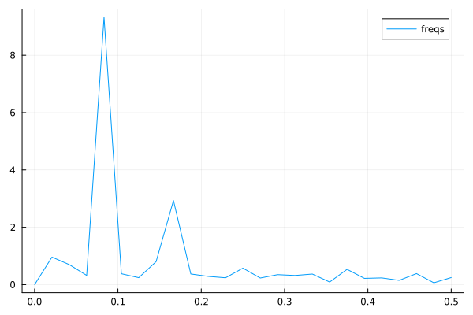
Plots of frequency content of temperature data. There is a peak at roughly 1/12 corresonding to a period of 1 year.¶
We use the frequency information for interpolation and extrapolation and thereby build a model of the data. To decrease overfitting, we may project to a lower dimensional subspace of basis functions (essentially trigonmetric functions) by setting a limit parameter proj_lim below.
# up sample function to finer grid (interpolation)
upsample = 2
L_u = floor(Int64, L*upsample)
t_u = (0:L_u-1)*L/L_u
# set limit for projection
# proj_lim 0 means no projection
function get_model(proj_lim)
y_fft_tmp = y_fft.*[ abs(x) < proj_lim*L ? 0.0 : 1.0 for x in y_fft]
# center frequencies on constant component (zero frequency)
y_fft_shift = fftshift(y_fft_tmp)
# fill in zeros (padding) for higher frequencies for upsampling
npad = floor(Int64, L_u/2 - L/2)
y_fft_pad = [zeros(npad); y_fft_shift; zeros(npad)]
# up sampling by applying inverse Fourier transform to paddded frequency vector
# same as interpolating using linear combination of trignometric functions
pred = real(ifft(fftshift(y_fft_pad)))*L_u/L
# ifft(fftshift(y_fft_pad))
pred = pred .+ the_mean
end
pred0 = get_model(0.0)
pred1 = get_model(1.0)
pred2 = get_model(2.0)
y = y .+ the_mean
t = (0:L-1)
plt = scatter([t t t], [y y y], layout=(3,1), label=["data" "data" "data"])
plot!([t_u t_u t_u], [pred2 pred1 pred0], layout=(3,1), label=["model crude" "model fine" "model overfit"], title=["meantemp crude (limit 2)" "meantemp fine (limit 1)" "meantemp overfit (limit 0)"], xlabel="time (months)", ylabel="C°", size=(800,800))
display(plt)

Three models of varying crudeness and overfit.¶
Scientific Machine Learning¶
Questions
What is the SciML Julia package and how to use it?
How can I mix physical pre-knowledge and data to solve modelling problems in Julia?
Instructor note
35 min teaching
15 min exercises
Callout
The code in this lesson is written for Julia v1.12.6.
A modelling problem¶
In this session we will have a look at a physical modelling problem and investigate how Machine Learning can be used in combination with classical modelling techniques.
Background on neural networks and scientific machine learning can be found
here download slides.
Consider a spherical object moving in a viscous fluid under the influence of drag along side other forces. We will consider this problem in 2 dimensions. The code below is adapted from the Missing Physics example included in the SciML documentation.
using LinearAlgebra, Statistics, Random
using ComponentArrays, Lux, Zygote, Plots
using OrdinaryDiffEq, ModelingToolkit, DataDrivenDiffEq, SciMLSensitivity, DataDrivenSparse
using Optimization, OptimizationOptimisers, OptimizationOptimJL, LineSearches
# random number generator
rng = Random.default_rng()
function dynamics!(du, u, p, t)
# mass is 1.0 unit
g = 10.0
# u[1] = x'
# u[2] = x
# u[3] = y'
# u[4] = y
# drag force, gravity and Lorentz force
du[1] = -((u[1]^2 + u[3]^2)^0.5)*u[1] + 2*u[3]
du[3] = -((u[1]^2 + u[3]^2)^0.5)*u[3] - g - 2*u[1]
# reduce to 1st order ODE system
du[2] = u[1]
du[4] = u[3]
end
tspan = (0.0, 1.0)
# sc = 1.0
deltat = 0.01
# u0 = sc * rand(4)
inits_g = [rand(4) for ii in range(1,1)]
# prob = ODEProblem(dynamics!, u0, tspan)
prbs = [ODEProblem(dynamics!, ui, tspan) for ui in inits_g]
times = Vector(0:deltat:1.0)
sols = [Array(solve(prb, Vern7(), abstol = 1e-12, reltol = 1e-12, saveat = deltat)) for prb in prbs]
Xs = hcat(sols...)
# for axis equal; aspect_ratio = :equal
scatter(Xs[2,:], Xs[4,:], alpha = 0.75, color = :green, label = "True Data")
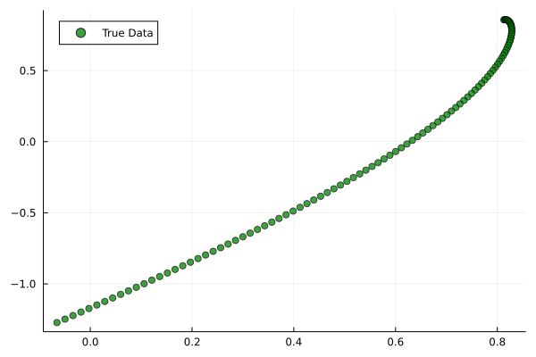
Solution to an initial value problem.¶
The object experiences a drag force which scales as the speed squared, and a constant gravitational pull. To illustrate the learning of missing physics, we have added a Lorentz force experienced by a charged particle under a constant magnetic field pointing in the z-direction.
# mass is 1.0 unit
# gravitational acceleration
g = 10.0
# drag force, gravity and Lorentz force
du[1] = -((u[1]^2 + u[3]^2)^0.5)*u[1] + 2*u[3]
du[3] = -((u[1]^2 + u[3]^2)^0.5)*u[3] - g - 2*u[1]
First consider an almost black box UDE (Universal Differential Equation) where we model the whole right-hand side of the equation system by a neural network. The model is helped by assumed prior knowledge of homogeneity and time-invariance. Time-invariance means here that the forces acting on the object depends only on its position and velocity and not explicitly on time. Homogeneity means here that the forces acting on the object actually only depend on its velocity, not its position.
using LinearAlgebra, Statistics, Random
using ComponentArrays, Lux, Zygote, Plots
using OrdinaryDiffEq, ModelingToolkit, DataDrivenDiffEq, SciMLSensitivity, DataDrivenSparse
using Optimization, OptimizationOptimisers, OptimizationOptimJL, LineSearches
# random number generator
rng = Random.default_rng()
function dynamics!(du, u, p, t)
# mass is 1.0 unit
g = 10.0
# u[1] = x'
# u[2] = x
# u[3] = y'
# u[4] = y
# drag force, gravity and Lorentz force
du[1] = -((u[1]^2 + u[3]^2)^0.5)*u[1] + 2*u[3]
du[3] = -((u[1]^2 + u[3]^2)^0.5)*u[3] - g - 2*u[1]
# reduce to 1st order ODE system
du[2] = u[1]
du[4] = u[3]
end
tspan = (0.0, 1.0)
# sc = 1.0
deltat = 0.1
# u0 = sc * rand(4)
inits_g = [rand(4) for ii in range(1,1)]
# prob = ODEProblem(dynamics!, u0, tspan)
prbs = [ODEProblem(dynamics!, ui, tspan) for ui in inits_g]
times = Vector(0:deltat:1.0)
sols = [Array(solve(prb, Vern7(), abstol = 1e-12, reltol = 1e-12, saveat = deltat)) for prb in prbs]
Xs = hcat(sols...)
# for axis equal; aspect_ratio = :equal
# scatter(Xs[2,:], Xs[4,:], alpha = 0.75, color = :green, label = "True Data")
# savefig("solutions_1.png")
# define our activation function, radial basis function
rbf(x) = exp.(-(x .^ 2))
# the neural network
const U = Lux.Chain(Lux.Dense(2, 5, rbf), Lux.Dense(5, 5, rbf), Lux.Dense(5, 5, rbf),
Lux.Dense(5, 2))
# Get the initial parameters and state variables of the model
p, st = Lux.setup(rng, U)
const _st = st
function ude_dynamics!(du, u, p, t)
û = U(u[[1,3],:], p, _st)[1]
# black box
du[1] = û[1]
du[3] = û[2]
# model with more structure
###du[1] = -((u[1]^2 + u[3]^2)^0.5)*u[1] + û[1]
###du[3] = -((u[1]^2 + u[3]^2)^0.5)*u[3] + û[2]
# reduce to 1st order ODE system
du[2] = u[1]
du[4] = u[3]
end
problems = [ODEProblem(ude_dynamics!, ui, tspan, p) for ui in inits_g]
function predict(θ, inits = inits_g, T = times)
_probs = [remake(problems[ii], u0 = inits[ii], tspan = (T[1], T[end]), p = θ)
for ii in range(1,size(inits)[1])]
allsols = [Array(solve(_prob,
Vern7(),
saveat = T,
abstol = 1e-6,
reltol = 1e-6,
sensealg = QuadratureAdjoint(autojacvec = ReverseDiffVJP(true))))
for _prob in _probs]
hcat(allsols...)
end
function loss(θ)
X̂ = predict(θ)
mean(abs2, Xs .- X̂)
end
losses = Float64[]
callback = function (state, l)
push!(losses, l)
if length(losses) % 50 == 0
println("Current loss after $(length(losses)) iterations: $(losses[end])")
end
return false
end
adtype = Optimization.AutoZygote()
optf = Optimization.OptimizationFunction((w,params) -> loss(w), adtype)
optprob = Optimization.OptimizationProblem(optf, ComponentVector{Float64}(p))
# epochs = 250
epochs = 1000
res = Optimization.solve(
optprob, LBFGS(linesearch = BackTracking()), callback = callback, maxiters = epochs)
println("Final training loss after $(length(losses)) iterations: $(losses[end])")
p_trained = res.u
plt = plot(1:length(losses), losses[1:end], yaxis = :log10, xaxis = :log10,
xlabel = "Iterations", ylabel = "Loss", label = "LBFGS", color = :red)
display(plt)
ts = first(times):(mean(diff(times)) / 2):last(times)
X̂ = predict(p_trained, inits_g, ts)
scatter(Xs[2,:], Xs[4,:], alpha = 0.75, color = :green, label = "True Data")
scatter!(X̂[2,:], X̂[4,:], alpha = 0.4, color = :red, label = "Prediction")
u_test = rand(4)
X̂_test = predict(p_trained, [u_test], ts)
prob_test = ODEProblem(dynamics!, u_test, tspan)
solution_test = solve(prob_test, Vern7(), abstol = 1e-12, reltol = 1e-12, saveat = deltat)
Xs_test = Array(solution_test)
scatter!(Xs_test[2,:], Xs_test[4,:], alpha = 0.75, color = :blue, label = "True Data Test")
#scatter(Xs_test[2,:], Xs_test[4,:], alpha = 0.75, color = :blue, label = "True Data Test")
scatter!(X̂_test[2,:], X̂_test[4,:], alpha = 0.4, color = :yellow, label = "Prediction Test")
# savefig("solutions_2.png")
At the end of the script, we plot the true data and model prediction on the trajectory that was used as training data, as well as a test trajectory with random initial values.
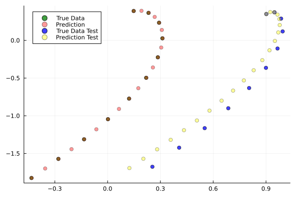
One training and one test trajectory with their corresponding predictions.¶
The predictions on the training trajectory are accurate but the predictions on the test trajectory are not very good. This is not too unexpected since we are only training the model on a single initial condition. Let’s see what happens when we train the model on trajectories from 6 randomly generated initial conditions instead.
# inits_g = [rand(4) for ii in range(1,1)]
inits_g = [rand(4) for ii in range(1,6)]

Training on 6 trajectories. Prediction on test trajectory is quite good in this case.¶
It takes the black box UDE about 1000 epochs to get a good result.

Training loss on the black box UDE model.¶
Now consider the case where, as an example, the drag force is known but not the rest of the dynamics. This means that the neural network has to learn for instance the Lorentz force from data. A model that uses partial pre-knowledge and learns the rest from data is called a hybrid model. To implement this, we make the following change in the function defining the UDE dynamics: explicitly encode the drag force and let the neural network take care of the rest, that is the other terms on the right-hand side of the system of equations.
function ude_dynamics!(du, u, p, t)
û = U(u[[1,3],:], p, _st)[1]
# black box
###du[1] = û[1]
###du[3] = û[2]
# model with more structure
du[1] = -((u[1]^2 + u[3]^2)^0.5)*u[1] + û[1]
du[3] = -((u[1]^2 + u[3]^2)^0.5)*u[3] + û[2]
du[2] = u[1]
du[4] = u[3]
end
In this case we get similar results but much quicker.

Training loss on the hybrid model.¶
Not assuming homogeneity
In the dynamics example above, what happens if you do not assume homogeneity? In other words, if the forces acting on the object are allowed to depend both the object’s velocity and position, as would be the case if for example the magnetic field was non-homogeneous. Try running the code under such weaker assumptions.
Modifications
You can change the definition of the UDE dynamics by letting the neural network that models the dynamics depend on both position and velocity:
function ude_dynamics!(du, u, p, t)
# û = U(u[[1,3],:], p, _st)[1]
û = U(u, p, _st)[1] # U depends on the whole u
# black box
du[1] = û[1]
du[3] = û[2]
# model with more structure
###du[1] = -((u[1]^2 + u[3]^2)^0.5)*u[1] + û[1]
###du[3] = -((u[1]^2 + u[3]^2)^0.5)*u[3] + û[2]
# reduce to 1st order ODE system
du[2] = u[1]
du[4] = u[3]
end
You also have to make sure that the neural network has 4 input nodes rather than just 2:
#const U = Lux.Chain(Lux.Dense(2, 5, rbf), Lux.Dense(5, 5, rbf), Lux.Dense(5, 5, rbf),
# Lux.Dense(5, 2))
const U = Lux.Chain(Lux.Dense(4, 5, rbf), Lux.Dense(5, 5, rbf), Lux.Dense(5, 5, rbf),
Lux.Dense(5, 2))
Typically you need more data to get similar results compared to the case where we assume homogeneity.
If you get issues with renaming \(U\) since you already ran the code with the original definition, you can restart the REPL or introduce another neural network \(V\) and replace \(U\) where needed.
The neural network
Experiment with other architecture of the neural network in the above example. How small (in terms of number of parameters) can it be and still perform well? Is the convergence rate slower or faster when the number of parameter increases or decreases? You can also try other activation functions and see how the model performs (tanh, ReLU, GELU, etc.).
Instructor’s guide¶
Prerequisites¶
This lesson material assumes some familiarity with Julia’s syntax. The necessary prerequisites are covered in the introductory Julia lesson which should be required reading for participants prior to attending a workshop. In addition, before the workshop the participants need to install the required packages as explained in Installing packages.
Mode of teaching¶
This lesson uses the VSCode environment as it is the preferred IDE by Julia developers and has a powerful language extension for Julia.
The prerequisite introductory Julia lesson has an initial hands-on episode “Special features of Julia” where only the Julia REPL is used. This makes learners comfortable with the REPL before moving on to the more complicated environment in VSCode.
Demonstrations, type-alongs and exercises¶
The instructor walks through the material and demonstrates all the coding found outside the special type-along todo boxes. It’s important to not rush and to clearly explain what is being written. It should be clear that learners are not expected to type-along during these sessions. The instructor can either type things out or copy-paste from the code blocks.
Some episodes have todo sections demarkated with light-violet boxes. It should be clearly explained that learners are expected to type-along during these sessions. Here’s it’s better for the instructor to type things out rather than copy-pasting everything, although larger code blocks should be copy-pasted to avoid error-prone and boring typing.
Each episode ends with one or more exercises. Learners should be given plenty of time to work on these. Recommended timings are provided at the top of each episode.
Possibly confusing points¶
To enable learners to copy-paste from code blocks to install and manage packages, the lesson adheres to the convention of using the
PkgAPI (e.g.using Pkg ; Pkg.add("some-package"). This is explained in the “Developing in Julia” episode of the introductory Julia lesson but needs to be explained very carefully to avoid confusion.
Schedule¶
The following schedule was used for a workshop in October 2023. As a prerequisite, one day was spent on the introductory Julia lesson according to the schedule. The next three days were scheduled as follows:
Day 1
Time |
Section |
|---|---|
9:00-9:10 |
Welcome |
9:10-9:25 |
Motivation (Julia for data analysis) |
9:25-9:45 |
Data formats and data frames |
9:45-10:00 |
Break |
10:00-10:45 |
Data formats and data frames |
10:45-11:00 |
Break |
11:00-12:00 |
Linear algebra |
Day 2
Time |
Section |
|---|---|
9:00-9:45 |
Clustering and classification |
9:45-10:00 |
Break |
10:00-10:45 |
Deep learning |
10:45-11:00 |
Break |
11:00-12:00 |
Non-linear regression |
Day 3
Time |
Section |
|---|---|
9:00-9:45 |
Non-linear regression (cont.) |
9:45-10:00 |
Break |
10:00-10:45 |
Scientific machine learning |
10:45-11:00 |
Break |
11:00-11:45 |
Scientific machine learning (cont.) |
11:45-12:00 |
Conclusions and outlook |
Future improvements of the lesson¶
Provide a Project.toml file in a repository for participants to download and instantiate in project environment before workshop starts.
Who is the course for?¶
This lesson material is targeted towards students, researchers and developers who:
are already familiar with one or more programming languages (Julia, Python, R, C/C++, Fortran, Matlab, …)
need to analyze big data or perform computationally demanding modeling or analysis
want to develop high-performance data science software but prefer to stay within a productive high-level language.
About the course¶
This lesson material is developed by the EuroCC National Competence Center Sweden (ENCCS) and taught in ENCCS workshops. It is aimed at researchers and developers who want to learn a modern, high-level, high-performace programming language suitable for scientific computing, data science, machine learning and high-performance computing on CPUs or GPUs. Each lesson episode has clearly defined questions that will be addressed and includes multiple exercises along with solutions, and is therefore also useful for self-learning. The lesson material is licensed under CC-BY-4.0 and can be reused in any form (with appropriate credit) in other courses and workshops. Instructors who wish to teach this lesson can refer to the Instructor’s guide for practical advice.
Graphical and text conventions¶
Different graphical elements are used to organize the material.
Type-along sections¶
Type-along sections are intended for live coding where all participants type-along and appear in a separate text box ‘Todo’:
Defining a variable
This is how you set a variable in Julia:
x = 1
Exercises¶
All lesson episodes (sections) end with one or more exercises for participants to practice what they’ve learned. Sometimes there’s also a solution:
Printing to screen
Which of these commands prints the value of the variable x?
print(x)println(x)write(x)
Solution
Correct answer is both 1 and 2! println() uses print() and adds a new line.
Important information¶
Sometimes important information is displayed inside boxes:
Important info
Please don’t hesitate to ask questions during the workshop!
Discussion¶
Discussion exercises are conducted either via voice or through a shared workshop document.
Are these instructions clear?
Discuss any questions about the lesson format either via the shared workshop document or in breakout room sessions.
See also¶
Many resources for learning Julia can be found at https://julialang.org/learning/. The list includes Julia Academy courses, the Julia manual, the Julia Youtube channel, and an assortment of tutorials and books.
Julia Data Science is an open source and open access book targeting researchers from all fields of applied sciences as well as industry.
A recent talk given by Kristoffer Carlsson, developer at Julia Computing in Sweden, gives an excellent overview on using Julia for HPC.
Credits¶
The lesson file structure and browsing layout is inspired by and derived from work by CodeRefinery licensed under the MIT license. We have copied and adapted most of their license text.
Several examples and formulations are inspired by other Julia lessons, particularly:
Educational prallelization/GPU-porting repository with C/C++/Fortran examples developed by CSC
Introduction to Julia provided by CSC and Aalto
Storopoli, Huijzer and Alonso (2021). Julia Data Science. ISBN: 9798489859165.
Instructional Material¶
All ENCCS instructional material is made available under the Creative Commons Attribution license (CC-BY-4.0). The following is a human-readable summary of (and not a substitute for) the full legal text of the CC-BY-4.0 license. You are free:
to share - copy and redistribute the material in any medium or format
to adapt - remix, transform, and build upon the material for any purpose, even commercially.
The licensor cannot revoke these freedoms as long as you follow these license terms:
Attribution - You must give appropriate credit (mentioning that your work is derived from work that is Copyright (c) ENCCS and, where practical, linking to https://enccs.se), provide a link to the license, and indicate if changes were made. You may do so in any reasonable manner, but not in any way that suggests the licensor endorses you or your use.
No additional restrictions - You may not apply legal terms or technological measures that legally restrict others from doing anything the license permits. With the understanding that:
You do not have to comply with the license for elements of the material in the public domain or where your use is permitted by an applicable exception or limitation.
No warranties are given. The license may not give you all of the permissions necessary for your intended use. For example, other rights such as publicity, privacy, or moral rights may limit how you use the material.
Software¶
Except where otherwise noted, the example programs and other software provided by ENCCS are made available under the OSI-approved MIT license.